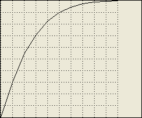
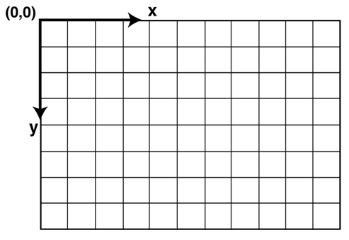

XML Interchange Language for System Dynamics (XMILE) Version 1.0
OASIS Standard
14 December 2015
Specification URIs
This version:
http://docs.oasis-open.org/xmile/xmile/v1.0/os/xmile-v1.0-os.doc (Authoritative)
http://docs.oasis-open.org/xmile/xmile/v1.0/os/xmile-v1.0-os.html
http://docs.oasis-open.org/xmile/xmile/v1.0/os/xmile-v1.0-os.pdf
Previous version:
http://docs.oasis-open.org/xmile/xmile/v1.0/csprd01/xmile-v1.0-csprd01.doc (Authoritative)
http://docs.oasis-open.org/xmile/xmile/v1.0/csprd01/xmile-v1.0-csprd01.html
http://docs.oasis-open.org/xmile/xmile/v1.0/csprd01/xmile-v1.0-csprd01.pdf
Latest version:
http://docs.oasis-open.org/xmile/xmile/v1.0/xmile-v1.0.doc (Authoritative)
http://docs.oasis-open.org/xmile/xmile/v1.0/xmile-v1.0.html
http://docs.oasis-open.org/xmile/xmile/v1.0/xmile-v1.0.pdf
Technical Committee:
OASIS XML Interchange Language (XMILE) for System Dynamics TC
Chairs:
Karim Chichakly (kchichakly@iseesystems.com), isee systems inc.
Steven Adler (adler1@us.ibm.com), IBM
Editors:
Karim Chichakly (kchichakly@iseesystems.com), isee systems inc.
Gary Baxter (garyrbaxter@yahoo.com), Individual
Robert Eberlein (bob@astutesd.com), System Dynamics Society, Inc.
Will Glass-Husain (wglass@forio.com), Individual
Robert Powers (bobbypowers@gmail.com), Individual
William Schoenberg (bschoenberg@iseesystems.com), isee systems inc.
Additional artifacts:
Related work:
This specification replaces or supersedes:
This specification is related to:
Declared XML namespace:
Abstract:
The XML Interchange Language (XMILE) for System Dynamics (SD) defines an open XML protocol for the sharing, interoperability, and reuse of SD models and simulations. This document describes the XMILE language and format anyone who wishes to use SD models or embed them in their applications, such as vendors of SD software, Big Data, cloud, mobile, and social media solutions, as well as end users and consultants in the SD field.
Status:
This document was last revised or approved by the OASIS XML Interchange Language (XMILE) for System Dynamics TC on the above date. The level of approval is also listed above. Check the “Latest version” location noted above for possible later revisions of this document. Any other numbered Versions and other technical work produced by the Technical Committee (TC) are listed at https://www.oasis-open.org/committees/tc_home.php?wg_abbrev=xmile #technical.
TC members should send comments on this specification to the TC’s email list. Others should send comments to the TC’s public comment list, after subscribing to it by following the instructions at the “Send A Comment” button on the TC’s web page at https://www.oasis-open.org/committees/xmile/.
For information on whether any patents have been disclosed that may be essential to implementing this specification, and any offers of patent licensing terms, please refer to the Intellectual Property Rights section of the Technical Committee web page (https://www.oasis-open.org/committees/xmile/ipr.php).
Citation format:
When referencing this specification the following citation format should be used:
[xmile-v1.0]
XML Interchange Language for System Dynamics (XMILE) Version 1.0. Edited by Karim Chichakly, Gary Baxter, Robert Eberlein, Will Glass-Husain, Robert Powers, and William Schoenberg. 14 December 2015. OASIS Standard. http://docs.oasis-open.org/xmile/xmile/v1.0/os/xmile-v1.0-os.html. Latest version: http://docs.oasis-open.org/xmile/xmile/v1.0/xmile-v1.0.html.
Notices
Copyright © OASIS Open 2015. All Rights Reserved.
All capitalized terms in the following text have the meanings assigned to them in the OASIS Intellectual Property Rights Policy (the "OASIS IPR Policy"). The full Policy may be found at the OASIS website.
This document and translations of it may be copied and furnished to others, and derivative works that comment on or otherwise explain it or assist in its implementation may be prepared, copied, published, and distributed, in whole or in part, without restriction of any kind, provided that the above copyright notice and this section are included on all such copies and derivative works. However, this document itself may not be modified in any way, including by removing the copyright notice or references to OASIS, except as needed for the purpose of developing any document or deliverable produced by an OASIS Technical Committee (in which case the rules applicable to copyrights, as set forth in the OASIS IPR Policy, must be followed) or as required to translate it into languages other than English.
The limited permissions granted above are perpetual and will not be revoked by OASIS or its successors or assigns.
This document and the information contained herein is provided on an "AS IS" basis and OASIS DISCLAIMS ALL WARRANTIES, EXPRESS OR IMPLIED, INCLUDING BUT NOT LIMITED TO ANY WARRANTY THAT THE USE OF THE INFORMATION HEREIN WILL NOT INFRINGE ANY OWNERSHIP RIGHTS OR ANY IMPLIED WARRANTIES OF MERCHANTABILITY OR FITNESS FOR A PARTICULAR PURPOSE.
OASIS requests that any OASIS Party or any other party that believes it has patent claims that would necessarily be infringed by implementations of this OASIS Committee Specification or OASIS Standard, to notify OASIS TC Administrator and provide an indication of its willingness to grant patent licenses to such patent claims in a manner consistent with the IPR Mode of the OASIS Technical Committee that produced this specification.
OASIS invites any party to contact the OASIS TC Administrator if it is aware of a claim of ownership of any patent claims that would necessarily be infringed by implementations of this specification by a patent holder that is not willing to provide a license to such patent claims in a manner consistent with the IPR Mode of the OASIS Technical Committee that produced this specification. OASIS may include such claims on its website, but disclaims any obligation to do so.
OASIS takes no position regarding the validity or scope of any intellectual property or other rights that might be claimed to pertain to the implementation or use of the technology described in this document or the extent to which any license under such rights might or might not be available; neither does it represent that it has made any effort to identify any such rights. Information on OASIS' procedures with respect to rights in any document or deliverable produced by an OASIS Technical Committee can be found on the OASIS website. Copies of claims of rights made available for publication and any assurances of licenses to be made available, or the result of an attempt made to obtain a general license or permission for the use of such proprietary rights by implementers or users of this OASIS Committee Specification or OASIS Standard, can be obtained from the OASIS TC Administrator. OASIS makes no representation that any information or list of intellectual property rights will at any time be complete, or that any claims in such list are, in fact, Essential Claims.
The name "OASIS" is a trademark of OASIS, the owner and developer of this specification, and should be used only to refer to the organization and its official outputs. OASIS welcomes reference to, and implementation and use of, specifications, while reserving the right to enforce its marks against misleading uses. Please see https://www.oasis-open.org/policies-guidelines/trademark for above guidance.
Table of Contents
2.3 Model Simulation Specification Section
2.11.2 Format of Included Files
3.6 Extending the Standard Language
3.6.1 Macros Implementing Functions
3.6.2 Macros Extending Building Block Behavior
3.7 Optional Language Extensions
4.1 Common Variable Properties
4.1.1 Ranges, Scales, Number Formats
4.5.3 Apply-to-All Arrays with Non-Apply-to-All Graphical Functions
4.8.1 Macros without Variables
4.8.3 Macros with Variables and Simulation Specs
4.8.4 Modifying Stock and Flow Behavior
5 Diagram and visual components structure
5.1 Introduction to the XMILE view
5.1.1 Referencing variable objects in an XMILE view
5.1.2 XMILE view assumptions and attributes
5.1.3 Referring to specific XMILE display objects
5.2 Common styles associated with all XMILE display objects
5.2.1 Specifications of padding
5.3 The cascading style system
6 Display and Interface XML Encoding
6.1 Stock and flow diagram objects
6.3.2 Switches and Radio Buttons (Option Groups)
6.3.3 Numeric Inputs and List Input Devices.
7 XMILE Implementation Conformance
7.2 Conformance Clause 1: XMILE File
7.2.2 Optional Conveyor Conformance
7.2.3 Optional Queue Conformance
7.2.4 Optional Array Conformance
7.2.5 Optional Submodel Conformance
7.2.6 Optional Macro Conformance
7.2.7 Optional Event-Poster Conformance
7.2.8 Optional Model-View Conformance
7.2.9 Optional Outputs Conformance
7.2.10 Optional Inputs Conformance
7.2.11 Optional Annotations Conformance
7.3 Conformance Clause 2: XMILE Simulator
7.3.2 Optional Conveyor Conformance
7.3.3 Optional Queue Conformance
7.3.4 Optional Array Conformance
7.3.5 Optional Submodel Conformance
7.3.6 Optional Macro Conformance
7.3.7 Optional Event-Poster Conformance
7.3.8 Optional Inputs Conformance
This document defines a specification for both a core system dynamics (SD) language and its representation in XML and thus provides a common structure for describing SD models.
In the Spring 2003 System Dynamics Society newsletter, Jim Hines proposed that there be a common interchange format for system dynamics models. Magne Myrtveit originally proposed such an idea at the 1995 International System Dynamics Conference (ISDC), but Jim hoped to revive interest in the idea and chose the name SMILE (Simulation Model Interchange LanguagE) to keep people lighthearted. The benefits Jim proposed at the time were:
To this formidable list, the following can be added:
Vedat Diker and Robert Allen later presented a poster at the 2005 ISDC that proposed a working group be formed and that XML be the working language for the standard, leading to the name XMILE (XML Modeling Interchange LanguagE). During the first meeting of the Information Systems Special Interest Group (SIG) at the 2006 ISDC, Karim Chichakly volunteered to develop the draft XMILE specification, which he presented at the 2007 ISDC. Several drafts later, the OASIS XMILE Technical Committee (TC) was formed in June 2013 to standardize the specification across all industries. This document is the result of that TC’s work.
This specification defines the XMILE specification version 1.0.
The key words “MUST”, “MUST NOT”, “REQUIRED”, “SHALL”, “SHALL NOT”, “SHOULD”, “SHOULD NOT”, “RECOMMENDED”, “MAY”, and “OPTIONAL” in this document are to be interpreted as described in [RFC2119].
File or XMILE File
An XML file that is conforms to this specification.
Model or XMILE Model
The model section of a XMILE file.
Root Model
The top-level model of a whole-model. This is the unnamed model within the XMILE file.
Simulator or XMILE Simulator
An implementation that simulates XMILE whole-models per this specification.
Whole-model or XMILE Whole-model
An XML file that conforms to this specification plus all XMILE files included through either the includes section of the header or through the resource attribute of a XMILE model or a module.
[RFC2119] Bradner, S., “Key words for use in RFCs to Indicate Requirement Levels”, BCP 14, RFC 2119, March 1997. http://www.ietf.org/rfc/rfc2119.txt.
A XMILE file contains information about a whole-model, with a well-specified structure. The file MUST be encoded in UTF-8. The entire XMILE file is enclosed within a <xmile> tag as follows:
<xmile version="1.0"
xmlns="http://docs.oasis-open.org/xmile/ns/XMILE/v1.0">
...
</xmile>
The version number MUST refer to the version of XMILE used (presently 1.0). The XML namespace refers to tags and attributes used in this specification. Both of these attributes are REQUIRED. Inside of the <xmile> tag are a number of top-level tags, listed below. These tags are marked req (a single instance is REQUIRED), opt (a single instance is OPTIONAL), * (zero or more tags MAY occur) and + (one or more tags MAY occur). Top level tags MAY occur in any order, but are RECOMMENDED to occur in the following order:
· <header> (req) - information about the origin of the file and required capabilities.
· <sim_specs> (opt) - default simulation specifications for this file.
· <model_units> (opt) - definitions of model units used in this file.
· <dimensions> (opt) - definitions of array dimensions specific to this file.
· <behavior> (opt) - simulation style definitions that are inherited/cascaded through all models defined in this XMILE file.
· <style> (opt) - display style definitions that are inherited/cascaded through all views defined in this XMILE file.
· <data> (opt) - definitions of persistent data import/export connections..
· <model>+ - definition of model equations and (optionally) diagrams.
· <macro>* - definition of macros that can be used in model equations.
These tags are specified in the subsequent sections of this chapter, after XMILE namespaces are discussed.
When an XMILE file includes references to models contained in separate files or at a specific URL, each such file may contain overlapping information, most commonly in sim_specs, model_units and dimensions. When such overlap is consistent, combining parts is done by taking the union of the different component files. When an inconsistency is found, (for example, a dimension with two distinct definitions) software reading the files MUST resolve the inconsistency and SHOULD provide user feedback in doing so. Some inconsistencies, such as conflicting Macro or Model names MUST be resolved as detailed in section 2.11.3.
There are four categories of namespaces in play in a XMILE whole-model - XML tag namespaces, Variable namespace, Function namespace and Unit namespaces. XML tag namespaces and Unit namespaces are independent, but Variable and Function namespaces interact.
XML tag namespaces are global. Unadorned tags are described in detail in the various sections of this document and provision for vendor specific additions are also detailed.
Each XMILE whole-model has a single Unit namespace against which all Unit Definitions and Equation Units are resolved. The Unit namespace is separate from any other namespaces and this means that the variables of units and variable or function names can overlap (for example someone might use Ounce/Min and define Min as an alias of Minute even though MIN is a reserved function name). Because this namespace crosses models Unit Definitions contained in separate files must be combined into this namespace.
The Function namespace combines global definitions (all functions defined here along with vendor specified functions) with whole-model specific definitions through Macros. In every case, however, the names MUST be uniquely resolvable within a whole-file independent of the file in which they appear. It is not possible, for example, to give the same macro name two different definitions in separate files. Dimension names, though conceptually part of the Variable namespace, behave the same way and MUST be unique across a whole-model.
Variable names are resolved within models, but in the same context as functions and therefore can't overlap. It is not, for example, possible to have a variable named MIN as this is a reserved function name. Similarly, if the macro BIGGEST has been defined, no variable may be given the name BIGGEST. It is, however, possible, to have the same variable name appear in different models. For example if you have a project with one model MyCompany and another model Competitors, both could contain the variable profit (with MyCompany.profit and Competitors.profit the way to refer to that variable from different models).
One final subtlety in namespaces is that Dimension names, in turn, define their own Element namespace. Thus, even though Array Dimension names must be unique, they can have overlapping Element names and the Element names can be the same as Variable names. Element names are resolved by context when they appear inside square brackets of a variable and can be used in context by prefixing them with the array dimension name (as in Location.Boston, where Location is a Dimension name with element Boston).
The XML tag for the file header is <header>. The REQUIRED sub-tags are:
· Vendor name: <vendor> w/company name
· Product name: <product version="…" lang="…"> w/product name – the product version number is REQUIRED. The language code is optional (default: English) and describes the language used for variable names and comments. Language codes are described by ISO 639-1 unless the language is not there, in which case the ISO 639-2 code should be used (e.g., for Hawaiian).
OPTIONAL sub-tags include:
· XMILE options: <options> (defined below)
· Model name: <name> w/name
· Model version: <version> w/version information
· Model caption: <caption> w/caption
· Picture of the model in JPG, GIF, TIF, or PNG format: <image resource=””>. The resource attribute is optional and may specify a relative file path, an absolute file path, or an URL. The picture data may also be embedded inside the <image> tag in Data URI format, using base64 encoding.
· Author name: <author> w/author name
· Company name: <affiliation> w/company name
· Client name: <client> w/client name
· Copyright notice: <copyright> w/copyright information
·
Contact information (e-mail, phone, mailing address, web site):
<contact>
block w/contact information broken into <address>,
<phone>,
<fax>, <email>, and <website>,
all optional
· Date created: <created> whose contents MUST be in ISO 8601 format, e.g. “ 2014-08-10”.
· Date modified: <modified> whose contents MUST be in ISO 8601 format, as well
· Model universally unique ID: <uuid> where the ID MUST be in IETF RFC4122 format (84-4-4-12 hex digits with the dashes)
· Includes: <includes> section with a list of included files or URLs. This is specified in more detail in Section 2.11.
The XMILE options appear under the tag <options>. This is a list of functionality that is used in the file that may not be included in all implementations. If a file makes use of any of the following functionality[1], it MUST be listed under the <options> tag. The available options are:
<uses_conveyor/>
<uses_queue/>
<uses_arrays/>
<uses_submodels/>
<uses_macros/>
<uses_event_posters/>
<has_model_view/>
<uses_outputs/>
<uses_inputs/>
<uses_annotation/>
There is one OPTIONAL attribute for the <options> tag:
· Namespace: namespace="…" with XMILE namespaces, separated by commas. For example, namespace="std, isee" means try to resolve unrecognized identifiers against the std namespace first, and then against the isee namespace. (default: std)
The <uses_arrays> tag has one REQUIRED attribute and OPTIONAL attribute:
· Required: Specify the maximum dimensions used by any variable in the whole-model: maximum_dimensions.
· Optional: Specify the value returned when an index is invalid: invalid_index_value="…" with NaN/0 (default: 0)
The <uses_macros> tag has two REQUIRED attributes:
· Has macros which are recursive (directly or indirectly): recursive_macros="…" with true/false.
· Defines option filters: option_filters="…" with true/false.
The <uses_conveyor> tag has two OPTIONAL attributes:
· Has conveyors that arrest: arrest="…" with true/false (default: false)
· Has conveyor leakages: leak="…" with true/false (default: false)
The <uses_queue> tag has one OPTIONAL attribute:
· Has queue overflows: overflow="…" with true/false (default: false)
The <uses_event_posters> tag has one OPTIONAL attribute:
· Has messages: messages="…" with true/false (default: false)
The <has_model_view> tag notes whether the XMILE file contains one or more <view> sections containing a visual representation of one or more models. Note that any software which supports XMILE should be able to simulate all whole-models, even those without diagrams.
The <uses_outputs> tag implies both time-series graphs and tables are included. It has three OPTIONAL attributes:
· Has numeric display: numeric_display="…" with true/false (default: false)
· Has lamp: lamp="…" with true/false (default: false)
· Has gauge: gauge="…" with true/false (default: false)
The <uses_inputs> tag implies sliders, knobs, switches, and option groups are included. It has three OPTIONAL attributes:
· Has numeric input: numeric_input="…" with true/false (default: false)
· Has list input: list="…" with true/false (default: false)
· Has graphical input: graphical_input="…" with true/false (default: false)
The <uses_annotation> tag implies text boxes, graphics frames, and buttons are included.
A sample options block appears below:
<options namespace="std, isee">
<uses_conveyors leak="true"/> <!-- has conveyors, some leak -->
<uses_arrays maximum_dimensions=”2”/> <!-- has 2D arrays -->
<has_model_view/> <!-- has diagram of model -->
</options>
Every XMILE file MUST contain at least one set of simulation specifications, either as a top-level tag under <xmile> or as a child of the root model. Note that simulation specifications can recur in each Model section to override specific global defaults. Great care should be taken in these situations to avoid nonsensical results.
The simulation specifications block is defined with the tag <sim_specs>. The following properties are REQUIRED:
· Start time: <start> w/time
· Stop time: <stop> w/time (after start time)
There are several additional OPTIONAL attributes and properties with appropriate defaults:
·
Step size: <dt>
w/value (default: 1)
Optionally specified as the integer reciprocal of DT (for DT <= 1 only) with
an attribute of <dt>:
reciprocal="…"
with true/false (default: false)
· Integration method: method="…" w/XMILE name (default: euler)
· Unit of time: time_units="…" w/Name (empty default)
· Pause interval: pause="…" w/interval (default: infinity – can be ignored)
· Run selected groups or modules: <run by="…"> with run type either: all, group, or module (default: all, i.e., run whole-model). Which groups or modules to run are identified by run attributes on the group or model.
All user-specified model unit definitions are specified in the <model_units> tag as shown below:
<model_units>
<unit name="models_per_person_per_year">
<eqn>models/person/year</eqn> <!-- name, equation -->
</unit>
<unit name="Rabbits">
<alias>Rabbit</alias> <!-- name, alias -->
</unit>
<unit name="models_per_year">
<eqn>models/year</eqn> <!-- name, eqn, alias -->
<alias>model_per_year</alias>
<alias>mpy</alias>
</unit>
<unit name="Joules" disabled="true"> <!-- disabled unit -->
<alias>J</alias>
</unit>
</model_units>
All unit definitions MUST contain a name, possibly an equation, and 0 or more aliases (Including a unit definition with only a name is valid but discouraged). Unit equations (<eqn> tag) are defined with XMILE unit expressions. One <alias> tag with the name of the alias appears for each distinct unit alias. A unit with the attribute disabled set to true MUST NOT be included in the unit substitution process. It is included to override a Unit Definition that may be built into the software or specified as a preference by the user.
Vendor-provided unit definitions not used in a model are NOT REQUIRED to appear in the file, but SHOULD be made available in this same format in a vendor-specific library.
When the <uses_arrays> XMILE option is set, a list of dimension names is REQUIRED. These dimension names must be consistent across the whole-model. The set of dimension names appear within a <dimensions> block as shown in the example below.
<dimensions>
<dim name="N" size="5"/> <!-- numbered indices -->
<dim name="Location"> <!-- named indices -->
<elem name="Boston"/> <!-- name of 1st index -->
<elem name="Chicago"/> <!-- name of 2nd index -->
<elem name="LA"/> <!-- name of 3rd index -->
</dim>
</dimensions>
Each dimension name is identified with a <dim> tag and a REQUIRED name. If the elements are not named, a size attribute greater or equal to one MUST be given. If the elements have names, they appear in order in <elem> nodes. The dimension size MUST NOT appear when elements have names as the number of element names always determines the size of such dimensions.
Every XMILE file MAY include behavior information to set default options that affect the simulation of model entities. Support for behaviors is REQUIRED. This is usually used in combination with macros to change some aspect of a given type of entity’s performance, for example, setting all stocks to be non-negative.
The behavior information cascades across four levels from the entity outwards, with the actual entity behavior defined by the first occurrence of a behavior definition for that behavior property:
1. Behaviors for a given entity
2. Behaviors for all entities in a model (affects only that Model section)
3. Behaviors for all entities in all models in the file (affects all Model sections)
4. Default XMILE-defined behaviors when a default appears in this specification
The behavior block begins with the <behavior> tag. Within this block, any known object can have its attributes set globally (but overridden locally) using its own modifier tags. Global settings that apply to everything are specified directly on the <behavior> tag or in nodes below it. This is true for <behavior> tags that appear within the <model> tag as well. For example, all entities (particularly stocks and flows) can be set to be non-negative by default:
<behavior>
<non_negative/>
</behavior>
Only stocks or only flows can also be set to non-negative by default (flows in this example):
<behavior>
<flow>
<non_negative/>
</flow>
</behavior>
Every XMILE file MAY include style information to set default options for display objects. When <has_model_view> is set in the <options> block, support for styles is REQUIRED. Being style information, this mostly belongs to the Presentation section (5.3), which describes the display and layout of XMILE files.
The style information is cascading across five levels from the entity outwards, with the actual entity style defined by the first occurrence of a style definition for that style property:
1. Styles for the given entity
2. Styles for all entities in a specific view
3. Styles for all entities in a collection of views
4. Styles for all entities in the XMILE file
5. Default XMILE-defined styles when a default appears in this specification
The style information usually includes program defaults when they differ from the standard, though it can also be used for file-specific file-wide settings. Whenever possible, style information uses standard CSS syntax and keywords recast into XML attributes and nodes.
The style block begins with the <style> tag. Within this block, any known object can have its attributes set globally (but overridden locally) using its own modifier tags. Global settings that apply to everything are specified directly on the <style> tag or in nodes below it; this is true for <style> tags that appear within the <views> tag as well. For example, the following sets the color of objects within all views in the file to blue and the background to white:
<style color="blue" background="white"/>
Unless otherwise indicated or specified, style information appears in XML attributes. For example, font_family would be an attribute.
These changes can also be applied directly to objects (again as a child to a <style> tag), e.g.,
<style color="blue" background="white">
<connector color="magenta">
</style>
Note that when style information applies to a specific object, that style cannot be overridden at a lower level (e.g., within a view) by a change to the overall style (i.e., by the options on the <style> tag). Using the example above, to override the color of connectors at a lower level (e.g., the Display), the <connector> tag must explicitly appear in that level’s style block. If it does not appear there, connectors will be magenta at that level by default, even if the style block at that level sets the default color of all objects to green. In other words, object-specific styles at any level above an object take precedence over an overall style defined at any lower level.
Persistent data import/export connections are defined within the OPTIONAL <data> tag, which contains one <import> tag for each data import connection and one <export> tag for each data export connection. Both tags include the following properties (the first four are optional):
· Type: type="…" with “CSV”, “Excel”, or “XML” (default: CSV)
· Enabled state: enabled="…" with true/false (default: true)
· How often: frequency="…" with either “on_demand” or “automatic” (default: automatic, i.e., whenever the data changes)
· Data orientation: orientation="…" with either “horizontal” or “vertical” (default: vertical)
· Source (import) or destination (export) location: resource="…". A resource can be a relative file path, an absolute file path, or an URL.
· For Excel only, worksheet name: worksheet="…" with worksheet name
The <export> also specifies both the optional export interval and one of two sources of the data:
· Export interval: interval="…" specifying how often, in model time, to export values during the simulation; use "DT" to export every DT (default: 0, meaning only once)
· <all/> to export all variables in the whole-model or <table uid="…"/> to just export the variables named in the table (note that any array element in the table will export the entire array when interval is set to zero). The <table> tag has an optional attribute use_settings="…" with a true/false value (default: false), which when true causes the table settings for orientation, interval, and number formatting to be used (thus, when it is set, neither orientation nor interval are meaningful, so should not appear). The uid used for the table must be qualified by the name of the module in which the table appears. If in the root a ‘.’ is prefixed to the name, same as module qualified variable names.
Model tags define models that can either be simulated directly, or instantiated inside of other models as a module. Chapter 4 contains the specification for <model> tags.
Macro tags define macros that can be used in model entity equations. Chapter 4 contains the specification for <macro> tags.
XMILE files MAY link to other XMILE files by using includes. Support for includes is REQUIRED. This serves the following use cases:
(1) A whole-model can be split across multiple files, allowing submodels and other components to be individually edited or versioned.
(2) A modeler may create a common library of submodels or macros and use them for multiple whole-models.
(3) A modeler may create a common style for models and include a common file for such style in different whole-models.
(4) A vendor may create a common library of macros with specific functionality used by all whole-models produced by that vendor's software.
Included files are specified with an <includes> tag which goes inside of <header>
<header>
...
<includes>
<include resource="http://systemdynamics.org/xmile/macros/standard-1.0.xml" />
<include resource="http://systemdynamics.org/xmile/macros/extra-1.0.xml" />
</includes>
</header>
The included resource can be specified in multiple ways. Specifically, the resource attribute can be specified with:
(1) URLs. By convention, a file retrieved from a URL is assumed to be an unchanging resource and may be cached. The file may also be provided automatically by the simulation software.
Example:
<include resource="http://systemdynamics.org/xmile/macros/standard-1.0.xml" />
(2) Relative file paths. Search relative to the location of the XMILE file. This allows modelers to distribute their whole-models as a folder of related files. This is a machine-independent path specification using "/" to separate directories. The "*" indicates a wildcard. Files are not cached.
<include resource="my-macro-library.xml" />
<include resource="macros/my-macro-library.xml" />
<include resource="macros/*" />
<include resource="macros/supplychain-*.xml" />
(3) Absolute file paths. Similar to relative file paths except that the resource starts with "/" or "file://". In such cases, the file path is loaded from an absolute location on the local machine. Application programs may choose to limit file access or base the root directory in a particular location (e.g. a home directory) for security reasons. A platform-specific volume name (e.g. "D:") may not be specified.
<include resource="/library/my-macro-library.xml" />
<include resource="file://library/my-macro-library.xml" />
If an absolute file path does not resolve to a file, as a fallback, the final filename in the path should be stripped off and that name used for a search relative to the XMILE file itself.
By convention, files included from URLs are assumed to be standard libraries provided by a vendor, organization or modeler, and MUST never change once public. Such files should be versioned in the form LIBRARY-MAJOR.MINOR.xml, e.g. "standard-1.0.xml". Changes to the content of such libraries will require the major or minor version number to be incremented. The full URL, e.g. “http://systemdynamics.org/xmile/macros/standard-1.0.xml” represents a unique identifier for the content of this file. Consequently, software packages MAY cache such libraries or come pre-bundled with libraries for particular vendors or organizations. Downloading the libraries each time the file is discouraged.
As a contrast, files specified with a file path (particularly a relative file path) are assumed to be part of the whole-model distribution and SHOULD be reloaded each time the file is loaded. Version numbers in the file name are allowed but not required.
The format of the included files is a simplified version of the format of the full XMILE file. The <header> tag is OPTIONAL, and if included can omit required header attributes. The <options> tag is optional.
<xmile
version="1.0"
xmlns=" http://docs.oasis-open.org/xmile/ns/XMILE/v1.0">
<header>
</header>
<macro name="LOG">
...
</macro>
<macro name="LOG10">
...
</macro>
</xmile>
<xmile version="1.0" level="2" xmlns="http://www.systemdynamics.org/XMILE">
<style>
...
</style>
</xmile>
<xmile version="1.0" level="2" xmlns="http://www.systemdynamics.org/XMILE">
<model>
...
</model>
</xmile>
Software packages MUST process included files before simulation is started, and the content of included files MUST be merged into the whole-model environment before simulation. Specifically:
· The <options> tag options will be merged with the <options> from the primary model. This means that if an included file specifies an option such as <uses_conveyor/>, then the simulation SHOULD assume the whole-model has the <uses_conveyor/> option specified. When merging XMILE <options> the most specific of each option will take priority.
· When an included file only contains <behavior> and/or <style> options[2], those <behavior> and <style> options in the included file will be merged into the default styles of the file including them. This allows behaviors and styles to be included from other files. When merging <behavior> and <style> options, any behaviors and styles specified in the file that included them will take priority. (This allows the file that included them to override styles specified in the included file).
· <model> and <macro> tags in the included file will be merged into the file that includes them at the start of that file, in the order in which they appear in the list of included files. If there are name conflicts between <model> and <macro> tags in the included file and the primary model, the primary model will take priority. (This allows the primary model to overwrite submodels or macros specified in the included file).
At their heart, system dynamics models are systems of integral (or differential) equations. We start from that perspective in defining the basic structure of the simulation language. Using this frame, a model is composed of stocks, flows, and other equations necessary to compute the flows or initialize the stocks which we will call inclusively auxiliaries. Stocks are also often called levels or states, and flows are often called rates or derivatives. All other computations can include constants, initialization computations, data constructs, and other items that will be distinguished by their defining equations - all will be referred to as auxiliaries. Stocks, flows, and auxiliaries will be collectively referred to as variables.
We also base our computational definition on the assumption that a model starts from some well-defined initial condition and then computations progress forward in time. Other approaches, such as mixed initial and terminal conditions or simulating backwards in time, can be applied to the models specified in this document but will require extensions of the specification to accommodate these differences.
We will refer to the computation used to determine the values of variables over time as "the simulation." In later sections, we will discuss solution techniques for integral equations, but for discussion purposes we will use the notion that time is broken up into finite intervals during this computation. We will call the time between these intervals DT, corresponding the denominator in the notation often used in introductory calculus courses. DT is directly analogous to Δt in the Riemann sum. This discrete time terminology is often used for pedagogical purposes and is also important in defining computation, especially with some of the added constructs such as queues now common in many system dynamics models.
As a final note, all variables in XMILE models are floating point numbers. It is recommended that software supporting XMILE use double-precision floating point numbers as specified by IEEE 754. At a minimum, such software should maintain at least single-precision floating point numbers.
The following sections define the core system dynamics language that is REQUIRED to be XMILE-compliant.
Stocks accumulate. To simulate, their value at the start of the simulation MUST be set as either a constant or with an initial equation. The initial equation is evaluated only once, at the beginning of the simulation.
During the course of the simulation, the value of a stock is increased by its inflows and decreased by its outflows. Using the discrete time interval dt and subscripted text to represent a value at given time, we can write
stockt = stockt - dt + dt×(inflowst - dt – outflowst - dt)
The above computation is notional, though it is used in one of the specified integration techniques (Euler).
In specifying a stock, we list its inflows and outflows separately as in:
stock: Population
inflows: births, immigration
outflows: deaths, emigration
eqn: 100
units: people
Flows represent rates of change of the stocks. To simulate, they MUST be defined using any algebraic expression as described in Section 3.3 or by using a graphical function as described in Section 3.1.4.
During the course of a simulation, a flow’s value is computed and used in the computation of levels as described. An example flow:
flow: births
eqn: Population*birth_rate
units: people/year
Auxiliaries allow the isolation of any algebraic function that is used. They can both clarify a model and factor out important or repeated calculations. To simulate, they MUST be defined using any algebraic expression (including a constant value), optionally in conjunction with a graphical function.
An example auxiliary:
aux: birth_rate
eqn: normal_birth_rate*food_availability_multiplier
units: people/person/year
Auxiliaries can also represent constants:
aux: normal_birth_rate
eqn: 0.04
units: people/person/year
Graphical functions are alternately called lookup functions and table functions. They are used to describe an arbitrary relationship between one input variable and one output variable. The domain of these functions is consistently referred to as x and the range is consistently referred to as y.
A graphical function MUST be defined either with an x-axis scale and a set of y-values (evenly spaced across the given x-axis scale) or with a set of x-y pairs. An example of a graphical function using an x-axis scale with a set of y-values:
Graphical Function:
food_availability_multiplier_function
x scale: 0 to 1
y values: 0, 0.3, 0.55, 0.7, 0.83, 0.9, 0.95, 0.98, 0.99, 0.995,
1
As there are 11 y values, the x-axis also must be divided into 11 values from zero to one, leading to an x-axis interval of 0.1. The graph of this function appears below.
0 
0 1
Distinct x-y pairs are intended for use when the function cannot be properly represented by using a fixed interval along the x-axis. Although not desired for the above graphical function, it can be represented using a set of x-y pairs as follows:
Graphical Function:
food_availability_multiplier_function
x values: 0, 0.1, 0.2, 0.3, 0.4, 0.5, 0.6, 0.7, 0.8,
0.9, 1
y values: 0, 0.3, 0.55, 0.7, 0.83, 0.9, 0.95, 0.98, 0.99, 0.995,
1
The example graphical function above is continuous. There are three types of graphical functions supported, with these names, which define how intermediate and out-of-range values are calculated:
Name Description
continuous Intermediate values are calculated with linear interpolation between the intermediate points. Out-of-range values are the same as the closest endpoint (i.e, no extrapolation is performed).
extrapolate Intermediate values are calculated with linear interpolation between the intermediate points. Out-of-range values are calculated with linear extrapolation from the last two values at either end.
discrete Intermediate values take on the value associated with the next lower x-coordinate (also called a step-wise function). The last two points of a discrete graphical function must have the same y value. Out-of-range values are the same as the closest endpoint (i.e, no extrapolation is performed).
Graphical functions can stand alone, as shown above, or be embedded within a flow or auxiliary. In the latter case, the graphical function name is OPTIONAL, for example:
aux:
food_availability_multiplier
eqn: Food
gf:
xscale: 0.0-1.0
ypts: 0, 0.3, 0.55, 0.7, 0.83, 0.9, 0.95, 0.98,
0.99, 0.995, 1
Larger models are typically organized into smaller parts, often called, groups, sectors or views, in order to make them easier to understand. In XMILE, this can be accomplished by arranging or tagging variables for inclusion in groups, breaking up the displays for a model into different views, nesting models, or creating separate models that exchange inputs and outputs with one another.
Groups represent the simplest of these organizational concepts. Groups allow related model variables to be collected in one physical place on the diagram. Any subset of groups MAY be independently simulated if the application software supports that, though no explicit restrictions on how such computational closure is obtained are required by the standard. Every group has a unique name and its own documentation. The names of variables of IDs of drawing objects within that group are listed in the group:
group: Fleet
Size
entities: Fleet, buy_planes, sell_planes
display: UID 7, UID 8
Groups do not have any direct effect on computation, except when simulated independently. Groups can also be used to control the visual display of models as discussed in later sections on this specification and can be used by documentation and other tools to organize equations and variable definitions.
Submodels are more formal than groups. These are extensions of the basic modeling language and so may not be supported by all implementations. They are described in a later section of this specification.
All statements and numeric constants follow US English conventions. Thus, built-in function names are in English, operators are based on the Roman character set, and numeric constants are expressed using US English delimiters (that is, a period is used for a decimal point).
Variable names, model names, group names, unit names, comments, and embedded text MAY be localized.
As mentioned, numeric constants MUST follow US English conventions and are expressed as floating point numbers in decimal. They begin with either a digit or a decimal point and contain any number of digits on either side of the OPTIONAL decimal point. They MUST contain at least one digit, but a decimal point is OPTIONAL. The number can be OPTIONALLY followed by an “E” (or “e”) and a signed integer constant. The “E” is used as shorthand for scientific notation and represents “times ten to the power of”.
In BNF,
number ::= { [digit]+[.[digit]*] | [digit]*.[digit]+ }[{E | e} [{+ | –}] [digit]+]
digit ::= { 0 | 1 | 2 | 3 | 4 | 5 | 6 | 7 | 8 | 9 }
Note that negative numbers are entered using the unary minus sign which is included in expressions (Section 3.3).
Sample numeric constants: 0 -1 .375 14. 6E5 +8.123e-10
Identifiers are used throughout a model to give variables, namespaces, units, subscripts, groups, macros, and models names. Most of these identifiers will appear in equations, and as such need to follow certain rules to allow for well-formed expressions.
The form of identifiers in XMILE is relatively restrictive, but arbitrary UTF8 strings MAY be included by surrounding the names in double quotes (") and appropriately escaping certain special characters. This will mean that some variable names may require quotes, even when they would not be required in their vendor-specific implementation.
Note the underscore (_) is often used in variables that appear in diagrammatic representations with a space. For example birth_rate might appear as simply birth rate in the diagram. One consequence of this is that birth_rate, "birth_rate", and "birth rate" are all considered to be the same name. Typically, only one of these forms (birth_rate) SHOULD be used.
Identifiers are formed by a sequence of one or more characters that include roman letters (A-Z or a-z), underscore (_), dollar sign ($), digits (0-9), and Unicode characters above 127. Identifiers SHALL NOT begin with a digit or a dollar sign (with exceptions as noted for units of measure), and SHALL NOT begin or end with an underscore.
Any identifier MAY be enclosed in quotation marks, which are not part of the identifier itself. An identifier MUST be enclosed within quotation marks if it violates any of the above rules. Within quotation marks, a few characters MUST be specified with an escape sequence that starts with a backslash. All other characters are taken literally. The only valid escape sequences appear below. No other character SHALL appear after a backslash. If any character other than those specified below appears after a backslash, the identifier is invalid.
Escape sequence Character
\" quotation mark (")
\n newline
\\ backslash
Sample identifiers:
Cash_Balance draining2 "wom multiplier" "revenue\ngap"
Control characters (those below U+0020) SHOULD never appear in an identifier, even one surrounded by quotation marks but MAY be treated as a space if encountered when reading a file.
Case-insensitive: Identifiers MAY use any mixture of uppercase and lowercase letters, but identifiers that differ only by case will be considered the same. Thus, Cash_Balance, cash_balance, and CASH_BALANCE are all the same identifier. For Unicode characters, case-insensitivity SHALL be defined by the Unicode Collation Algorithm (UCA – http://www.unicode.org/unicode/reports/tr10/), which is compliant with ISO 14651. For C, C++, and Java, this algorithm is implemented in the International Components for Unicode (ICU – http://site.icu-project.org/).
Whitespace: Whitespace characters SHALL include the space ( ), non-breaking space (U+00A0), newline (\n), and underscore (_). Within an identifier, whitespace characters SHALL be considered equivalent. Thus, wom_multiplier is the same identifier as "wom multiplier" and "wom\nmultiplier".
Additionally, groups of whitespace characters SHALL always be treated as one whitespace character for the purposes of distinguishing between identifiers. Thus, wom_multiplier is the same identifier as wom______multiplier.
Unicode equivalences: There are several Unicode spaces, e.g., the en-space (U+2002) and the em-space (U+2003). These SHALL not treated as whitespace within XMILE. If they are supposed to be treated as whitespace, be certain to map them to a valid XMILE whitespace character when entered by the user. Likewise, the roman characters, including letters, digits, and punctuation, are duplicated at full width from U+FF00 to U+FF5E. These SHALL NOT be recognized in XMILE as valid operators, symbols, or digits, nor do the letters match with the normal roman letters. It is strongly RECOMMENDED that these be mapped to the appropriate roman characters when entered by the user.
To avoid conflicts between identifiers in different libraries of functions, each library, whether vendor-specific or user-defined, SHOULD exist within its own namespace.[3] Note that identifiers within macros and submodels, by definition, appear in their own local namespace (see Sections 3.6.1 and 3.7.4). Array dimension names also receive special treatment as described below and in section 3.7.1.
A namespace SHALL be specified with an identifier. An identifier from a namespace other than the local one is only accessible by qualifying it with its namespace, a period (.), and the identifier itself, with no intervening spaces. For example, the identifier find within the namespace funcs would be accessed as funcs.find (and not as funcs . find). Such a compound identifier is known as a qualified name; those without the namespace are known as unqualified.
Namespace identifiers MUST be unique across a whole-model and cannot conflict with any other identifier. XMILE predefines its own namespace and a number of namespaces for vendors:
Name Purpose
std All XMILE statement and function identifiers[4]
user User-defined function and macro names
anylogic All Anylogic identifiers
forio All Forio Simulations identifiers
insightmaker All Insight Maker identifiers
isee All isee systems identifiers
powersim All Powersim Software identifiers
simanticssd All Simantics System Dynamics Tool identifiers
simile All Simulistics identifiers
sysdea All Strategy Dynamics identifiers
vensim All Ventana Systems identifiers
It is RECOMMENDED that user defined functions and macros be included in a child namespace of the global user namespace.
Namespaces MAY be nested within other namespaces. For example, isee.utils.find would refer to a function named find in the utils namespace of the isee namespace.
Unqualified names are normally only resolved within the containing model (along with the implicit array namespace or, in a macro definition, strictly inside the macro), i.e., they are assumed local to their model. However, an entire XMILE file, or individual models within an XMILE file, can avoid the use of qualified names from other namespaces, especially for function names in equations, by specifying that the given file or model uses one or more namespaces. In this case, unqualified names MUST first be resolved locally, within the containing model. If no match is found, the specified namespaces MUST then be searched in order, from left to right as specified, until a match is found. By obeying the specified namespace order, XMILE allows user to control how conflicting identifiers are resolved. However, it is strongly RECOMMENDED that a warning be generated for such conflicts. It is also RECOMMENDED that vendors provide an option to treat these as errors.
Note this namespace resolution capability is only available for explicitly defined namespaces and not for the implicit namespaces of submodels (see Section 3.7.4). Any identifiers other than array dimensions that are accessed across models MUST be qualified.[5]
By default, all XMILE files are in the std namespace, but this MAY be overridden by explicitly setting one or more namespaces. It is intended that most XMILE files SHALL specify that they use the std namespace, thus obviating the need to include std. in front of all XMILE identifiers.
The same identifier can be used in different namespaces, but identifiers in the std namespace SHOULD be reserved to prevent confusion. Similarly, identifiers in any libraries of functions or macros (whether vendor-supplied or user-defined) SHOULD be avoided. It is strongly RECOMMENDED that implementations do not allow the addition of model variables that are the same as function or macro names and that when a new library is added to the whole-model, a check for conflicting symbols be performed.
Identifiers defined by XMILE, including registered vendor namespaces (see Section 3.2.2.3), should be chosen so that they do not require quotation marks. Note that the registered vendor names are all in lowercase; this is intentional. It is also preferred that vendors choose the identifiers within their namespaces such that they do not require quotation marks.
The operator names AND, OR, and NOT, the statement keywords IF, THEN, and ELSE, the names of all built-in functions, and the XMILE namespace std, are reserved identifiers. They cannot be used as vendor- or user-defined namespaces, macros, or functions. Any conflict with these names that is found when reading user- or vendor-supplied definitions SHOULD be flagged as an error to the end user.
There is only one data type in XMILE: real numbers. Although some parts of the language require integers, e.g., array indices, these are still represented as real numbers.
All containers in XMILE are lists of numbers. As much as possible, the syntax and operation of these containers are consistent. Only one container is inherent to XMILE: graphical functions. Three containers are optional in XMILE: arrays, conveyors, and queues.
Neither a graphical function nor an array SHALL change its size during a simulation. However, the size of a conveyor (its length) MAY change and the size of a queue changes as a matter of course during a simulation.
Since all four containers are lists of numbers we may wish to operate on (for example, find their mean or examine an element), they are uniformly accessed with square bracket notation as defined in Section 3.7.1, Arrays. There are also a number of built-in functions that apply to all of them. These features are OPTIONAL and are only guaranteed to be present if arrays are supported.
Equations are defined using expressions. The simplest expression is simply a constant, e.g., 3.14.
Expressions are infix (e.g., algebraic), following the general rules of algebraic precedence (parenthesis, exponents, multiplication and division, and addition and subtraction – in that order). Since our set of operators is much richer than basic algebra, we have to account for functions, unary operators, and relational operators. In general, the rules for precedence and associativity (the order of computation when operators have the same precedence) follow the established rules of the C-derived languages.
Expressions in an XMILE document MUST follow the rules or assertions expressed in this section and sub-sections, even when these are not worded using RFC2119 keywords.
The following table lists the supported operators in precedence order. All but exponentiation and the unary operators have left-to-right associativity (right-to-left is the only thing that makes sense for unary operators).
Operators Precedence Group (in decreasing order)
[ ] Subscripts
( ) Parentheses
^ Exponentiation (right to left)
+ – NOT Unary operators positive, negative, and logical not
* / MOD Multiplication, division, modulo
+ – Addition, subtraction
< <= > >= Relational operators
= <> Equality operators[6]
AND Logical and
OR Logical or
Note the logical, relational, and equality operators are all defined to return zero (0) if the result is false and one (1) if the result is true.
Modulo is defined to return the floored modulus proposed by Knuth. In this form, the sign of the result always follows the sign of the divisor, as one would expect.[7]
Sample expressions: a*b (x < 5) and (y >= 3) (–3)^x
Parentheses are also used to provide parameters to function calls, e.g., ABS(x). In this case, they take precedence over all operators (as do the commas separating parameters). Note that functions that do not take parameters do not include parentheses when used in an equation, e.g., TIME. There are several cases where variable names MAY be (syntactically) used like a function in equations:
One control structure statement MUST be supported:
IF condition THEN expression ELSE expression
where condition is an expression that evaluates to true or false. We follow the convention of C that all non-zero values are true, while zero is false. Generally, condition is an expression involving the logical, relational, and equality operators.
Note that some vendors implement this as a built-in function:
if_then_else(condition, then-expression, else-expression)
While the statement form is preferred, this OPTIONAL alterative, if used, should be implemented by the vendor using an XMILE macro (Section 3.6).
Comments are provided to include explanatory text that is ignored by the computer and MUST be supported. Comment are delimited by braces { } and MAY be included anywhere within an expression. This functionality allows the modeler to temporarily turn off parts of an equation or to comment the separate parts of a complex formulation.
Sample comments: a*b { take product of a and b } + c { then add c }
Each variable OPTIONALLY has its own documentation, which is a block of unrestricted text unrelated to the equation. This MAY be stored in either plain text or in rich text (HTML).
Each variable OPTIONALLY has its own units of measure, which are specified by combining other units defined in the units namespace as described below.
Units of measure are specified with XMILE expressions, called the unit equation, restricted to the operators ^ (exponentiation), - or * (multiplication), and / (division) with parentheses as needed to group units in the numerator or denominator. Exponents MUST be integers. When there are no named units in the numerator (e.g., units of “per second”), the integer one (1), or one of its aliases as described below, MUST be used as a placeholder for the numerator (e.g., 1/seconds). The integer one (1) MAY be used at any time to represent the identity element for units and both Dimensionless and Dmnl are RECOMMENDED as built-in aliases for this.
Units appearing in the unit equation MAY also be defined in terms of other units. For example, Square Miles would have the equation Miles^2. When a unit is defined in this way, any use of it is the equivalent of using its defining equation. Units with no defining equation are called primary units. Every unit equation can be reduced to an expression involving only primary units by the process of substitution.
Unit aliases allow multiple names to have the same meaning. For example, People, Person, and Persons could all be considered to be the same. When a unit has an alias, that unit's name or any of its aliases MAY be used interchangeably for the purpose of specifying the units equation. Aliases are actually a special case of units being defined by other units, but allowing multiple aliases simplifies the way that information about units is kept. Unit aliases may be chained by specifying the name of an existing unit (or one of its aliases) as the equation. This allows the addition of user-defined aliases for built-in units in a straightforward manner.
A unit is thus specified by a name, an equation, and a sequence of aliases. The name and equation are standard XMILE identifiers except that $ is allowed as the first (and often only) character in the name of a unit without surrounding quotes. Also, the single digit 1 is used as the unit identity. Like variables names, unit names are stored with underscores (_) but generally presented to users with spaces. A unit with no equation is a primary unit. A unit with an equation SHOULD, when possible, be presented to the user with its name rather than its equation
There is a separate unnamed namespace for units. All units, regardless of which model they are contained in, are resolved against that single namespace.
The following baseline unit definitions are RECOMMENDED. 1 is REQUIRED.
Name Equation Aliases
1 Dimensionless, Unitless, Dmnl
nanoseconds ns, nanosecond
microseconds us, microsecond
milliseconds ms, milliseconds
seconds s, second
per_second 1/seconds
minutes min, minute
per_minute 1/minutes
hours hr, hour
per_hour 1/hours
days day
per_day 1/days
weeks wk, week
per_week 1/weeks
months mo, month
per_month 1/months
quarters qtr, quarter
per_quarter 1/quarters
years yr, year
per_year 1/years
Each model SHOULD contain a list of unit definitions that are used by that model to resolve unit equations for the purpose of checking units. While, when defining a unit, both the equation and the aliases are optional, a unit that has neither SHOULD NOT be separately defined, as such units MUST be recognized implicitly when the unit equation is parsed. Since an XMILE file may reference other files with Unit Definitions, there MAY be repetition within these. Repetition MUST be ignored.
Because unit definitions can involve equations, they have the potential to be circular. The unit definitions specified in a whole-model MUST NOT have any circularity either through their equations or aliases. This also means that no alias SHALL appear more than once, or as a name. If a circular definition, name repetition, or alias repetition occurs as a result of combining the specified units with an implementation's built-in units, the implementation SHOULD respect the unit definitions for the model when it is possible to do so. To make that resolution persist, it is also possible to mark unit names, and by implication their associated equation and aliases, as “disabled” in the XMILE file. Disabled definitions MAY be ignored in implementations where the name does not exist in the built-in unit definitions.
Every XMILE model MUST specify the start time and the stop time of the simulation. If DT is not specified, it defaults to one (1). For DT <= 1, DT MAY be specified as an integer reciprocal (e.g., 16 for DT = 1/16). Units of time MUST be specified, usually with XMILE predefined time units (Section 3.3.6).
The language also supports an OPTIONAL pause interval. By default, a model runs to completion (from STARTTIME to STOPTIME). However, if the pause interval is specified, the model pauses at all times that match STARTTIME + interval*N; N > 0. Software packages are free to ignore this specification if they do not support this mode of operation.
The simulation specifications MAY also specify whether to only run selected groups (each selected group is marked), only run selected submodels (each selected submodel is marked), or run the whole-model (default).
By default, the integration method is Euler’s, but other methods are supported as follows:
XMILE Name Integration Method
euler Euler’s method (default)
rk4 Runge-Kutta 4
rk2 Runge-Kutta 2 (OPTIONAL – falls back to RK4)
rk45 Runge-Kutta mixed 4th- 5th-order (OPTIONAL)
gear Gear algorithm (OPTIONAL)
The last three integration methods are OPTIONAL. In these cases, a supported fallback method SHOULD also be provided, for example, “gear, rk4”. This means that Gear should be used if the product supports it. Otherwise, use rk4.
Some vendors do not offer RK2, as it is less useful than it once was when computing power was expensive. XMILE defines RK4 to always be the fallback for RK2, i.e., RK2 implies “rk2, rk4.”
Events based on entity values MAY be triggered while the model is being simulated. Any implementation that does not support simulation events is free to ignore them.
Within the simulation, these events are limited to pausing or stopping the simulation. Events are specified as a series of threshold values that, when exceeded, trigger the specified action:
XMILE Name Action
pause Pause the simulation (default)
stop Stop the simulation
message Issue a message such as a warning but allow the simulation to continue
For each value, thresholds can be exceeded in either of two directions (only):
XMILE Name Action occurs when entity value becomes:
increasing Larger than the threshold (default)
decreasing Smaller than the threshold
The number of times the event occurs during the simulation (its frequency) can also be controlled:
XMILE Name Event occurs:
each Each time the threshold is exceeded (default)
once Only the first time the threshold is exceeded each run
once_ever Only the first time the threshold is exceeded this session
When the frequency is set to each, an OPTIONAL repetition interval can also be specified which causes the event to be triggered again every so many unit times (at the specified interval) that the variable remains above the threshold.
Each unique threshold value and direction MAY be given more than one event. In this case, the events are triggered in order based on which instance the threshold has been exceeded since the start of the run. For example, if there are three events assigned to a threshold of 5 (increasing), the first event will be triggered the first time the variable goes above 5, the second event will be triggered the second time it goes above 5, and the third will be triggered the third time it goes above 5. If the variable goes above 5 after that, no further events will be triggered. When multiple events are assigned in this way, the frequency can only be once or once_ever (i.e., it cannot be each).
A range (minimum and maximum) that contains all events MAY also be specified to more readily allow the user to edit the thresholds in context. By default, this range should be initialized to the variable’s known range at the time the events are first created (the user then has to modify them if they are no longer appropriate; they do not readjust if the variable’s range changes).
Certain built-in functions must be relied upon across all systems. This section strives to define the minimum set of built-in functions that MUST be supported, along with their parameters. The mechanism for defining vendor-specific built-ins is described in Section 3.6.
ABS: absolute value (magnitude) of a number
Parameters: 1: the number to take the absolute value of
Range: [0, µ)
Example: ABS(Balance)
ARCCOS: arccosine of a number
Parameters: 1: the number to take the arccosine of
Range: (0, p)
Example: ARCCOS(x)
ARCSIN: arcsine of a number
Parameters: 1: the number to take the arcsine of
Range: (-p/2, p/2)
Example: ARCSIN(x)
ARCTAN: arctangent of a number
Parameters: 1: the number to take the arctangent of
Range: (-p/2, p/2)
Example: ARCTAN(x)
COS: cosine of an angle in radians
Parameters: 1: the number to take the cosine of
Range: [-1, 1]
Example: COS(angle)
EXP: value of e raised to the given power
Parameters: 1: the power on e
Range: (-µ, µ)
Example: EXP(x)
INF: value of infinity
Parameters: none
Example: INF
INT: next integer less than or equal to the given number
Parameters: 1: the number to find next lowest integer of
Range: (-µ, µ); note negative fractional numbers increase in magnitude
Example: INT(x)
LN: natural (base-e) logarithm of the given number
Parameters: 1: the number to find the natural logarithm of
Range: [0, µ); note domain is (0, µ)
Example: LN(x)
LOG10: base-10 logarithm of the given number
Parameters: 1: the number to find the base-10 logarithm of
Range: [0, µ); note domain is (0, µ)
Example: LOG10(x)
MAX: larger of two numbers
Parameters: 2: the numbers to compare
Example: MAX(x, y)
MIN: smaller of two numbers
Parameters: 2: the numbers to compare
Example: MIN(x, y)
PI: value of p, the ratio of a circle’s circumference to its diameter
Parameters: none
Example: PI
SIN: sine of an angle in radians
Parameters: 1: the number to take the sine of
Range: [-1, 1]
Example: SIN(angle)
SQRT: square root of a positive number
Parameters: 1: the number to take the square root of
Range: [0, µ); note domain is the same
Example: SQRT(x)
TAN: tangent of an angle in radians
Parameters: 1: the number to take the tangent of
undefined for odd multiples of p/2
Range: (-µ, µ)
Example: TAN(angle)
EXPRND: Sample a value from an Exponential distribution
Parameters: 1 or 2: (mean[, seed]); 0 ≤ seed < 232
If seed is provided, the sequence of numbers will always be identical
Example: EXPRND(8) samples from an exponential distribution with mean 8
LOGNORMAL: Sample a value from a log-normal distribution
Parameters: 2 or 3: (mean, standard deviation[, seed]); 0 ≤ seed < 232
If seed is provided, the sequence of numbers will always be identical
Example: LOGNORMAL(10, 1) samples from a lognormal distribution with mean 10 and standard deviation 1
NORMAL: Sample a value from a Normal distribution
Parameters: 2 or 3: (mean, standard deviation[, seed]); 0 ≤ seed < 232
If seed is provided, the sequence of numbers will always be identical
Example: NORMAL(100, 5) samples from N(100, 5)
POISSON: Sample a value from a Poisson distribution
Parameters: 2 or 3: (mean[, seed]); 0 ≤ seed < 232
If seed is provided, the sequence of numbers will always be identical
Example: POISSON(3) samples from a Poisson distribution with a mean arrival rate of 3 arrivals per unit time
RANDOM: Sample a value from a uniform distribution
Parameters: 2 or 3: (minimum, maximum[, seed]); 0 ≤ seed < 232
If seed is provided, the sequence of numbers will always be identical
Example: RANDOM(1, 100) picks a random number between 1 and 100
DELAY: infinite-order material delay of the input for the requested fixed time
Parameters: 2 or 3: (input, delay time[, initial value])
If initial value is not provided, the initial value of input will be used
Example: DELAY(orders, ship_time)
DELAY1: first-order material delay of the input for the requested fixed time
Parameters: 2 or 3: (input, delay time[, initial value])
If initial value is not provided, the initial value of input will be used
Example: DELAY1(orders, ship_time)
DELAY3: third-order material delay of the input for the requested fixed time
Parameters: 2 or 3: (input, delay time[, initial value])
If initial value is not provided, the initial value of input will be used
Example: DELAY3(orders, ship_time)
DELAYN: Nth-order material delay of the input for the requested fixed time
Parameters: 3 or 4: (input, delay time, n[, initial value])
If initial value is not provided, the initial value of input will be used
Example: DELAYN(orders, ship_time, 10) delays orders using a 10th order material delay
FORCST: Perform a trend extrapolation over a time horizon
Parameters: 3 or 4: (input, averaging time, horizon, [, initial trend])
If initial trend is not provided, zero will be used
Example: FORCST(Quality, 5, 10) calculates value of quality 10 time units in the future
SMTH1: first-order exponential smooth of the input for the requested time
Parameters: 2 or 3: (input, averaging time[, initial value])
If initial value is not provided, the initial value of input will be used
Example: SMTH1(Quality, perception_time)
SMTH3: third-order exponential smooth of the input for the requested time
Parameters: 2 or 3: (input, averaging time[, initial value])
If initial value is not provided, the initial value of input will be used
Example: SMTH3(Quality, perception_time)
SMTHN: Nth-order exponential smooth of the input for the requested time
Parameters: 3 or 4: (input, averaging time, n[, initial value])
If initial value is not provided, the initial value of input will be used
Example: SMTHN(Quality, perception_time, 10) performs a 10th order smooth
TREND: Find trend in input over a given time frame
Parameters: 2 or 3: (input, averaging time, [, initial value])
If initial value is not provided, zero will be used
Example: TREND(Quality, 5) calculates the fractional change in Quality per unit time
PULSE: Generate a one-DT wide pulse at the given time
Parameters: 2 or 3: (magnitude, first time[, interval])
Without interval or when interval = 0, the PULSE is generated only once
Example: PULSE(20, 12, 5) generates a pulse value of 20/DT at time 12, 17, 22, etc.
RAMP: Generate a linearly increasing value over time with the given slope
Parameters: 2: (slope, start time); begin in-/de-creasing at start time
Example: RAMP(2, 5) generates a ramp of slope 2 beginning at time 5
STEP: Generate a step increase (or decrease) at the given time
Parameters: 2: (height, start time); step up/down at start time
Example: STEP(6, 3) steps from 0 to 6 at time 3 (and stays there)
DT: value of DT, the integration step
Parameters: none
Example: DT
STARTTIME: starting time of the simulation
Parameters: none
Example: STARTTIME
STOPTIME: ending time of the simulation
Parameters: none
Example: STOPTIME
TIME: current time of the simulation
Parameters: none
Example: TIME
INIT: initial value (i.e., value at STARTTIME) of a variable
Parameters: 1: the variable to get the initial value of
Example: INIT(Balance)
PREVIOUS: previous value of a variable
Parameters: 2: variable and initial value expression, i.e., (variable, initial value)
Example: PREVIOUS(price, 0) returns the value of price in the last DT, or zero in the first DT
SELF: refers to variable the equation defines. Only valid within the PREVIOUS function and the SIZE function defined in the section on Arrays below.
Parameters: none
Examples: PREVIOUS(SELF, 0) retains our previous value in the next DT
XMILE OPTIONALLY provides a way for vendors to specify the operation of both their own functions and the functions of other vendors that their users wish to use. In the latter case, these can map to either their own functions (if available) or to the XMILE functions. As described in Section 3.2.2.3, vendor-specific function names SHOULD appear in their own namespace, and thus be prefixed by a vendor identifier to avoid conflicting names between both different vendors and XMILE, e.g., isee.HISTORY.
As a simple example, let us say that vendor A does not have a LOG10 built-in, but has a general (any base) LOG built-in. That vendor should then be able to map any LOG10(x) function to LOG(x, 10) when the file is read in. Conversely, if the vendor wishes to use their general LOG function within XMILE, they should be able to provide a translation that maps LOG(x, y) to LN(x)/LN(y).[8]
The first kind of translation, from XMILE functions to the vendor’s functions, could be handled either by the vendor as the file is read in, or through an XSLT translator. The macro functionality described below could also handle this (by creating a macro for the XMILE function).
The second kind of translation, mapping unsupported functions in the file to XMILE, is the main focus of this section. Every unsupported built-in that a vendor wants to appear within an XMILE file needs to be defined in an XMILE macro. The macros may appear in the same file as the model or in a separate file, perhaps on the Internet. Each vendor is encourages to provide their file of macros to use with their models and to provide that file at a canonical URL.
The exact format used for defining macros is described in Chapter 4.
Macro support in XMILE implementations is OPTIONAL. However, if an implementation does not support them, it cannot simulate models that use vendor-specific functions. Macros can use all of the syntax of XMILE to achieve their result. The simplest kind of macro is a single expression using existing functions and operators. In this regard, its value is specified in the same way as an auxiliary. The change of base formula above is a good example:
LOG(x, y):
LN(x)/LN(y)
Macros can be recursive, so a slightly more complicate macro would call itself:
FACT(x):
IF x <= 1 THEN 1 ELSE x*FACT(x – 1)
More complicated macros can use stocks, flows, and auxiliaries to define their behavior. This would be the approach, for example, to implement a smooth function if one did not already exist:
SMOOTH1(input, averaging_time) returns Smooth_of_Input:
stock: Smooth_of_Input
inflows: change_in_smooth
initial eqn: input
flow: change_in_smooth
eqn: (input – Smooth_of_Input)/averaging_time
Macros can also run with their own simulation specifications, which can be calculated from the passed parameters. Such macros are, in fact, independent models that run to completion each time they are invoked. The factorial function, defined recursively above, can also be defined using stocks and flows, provided the simulation specifications are given to run from 1 to x with the default DT of one:
FACT(x) returns Current_Factorial:
stock: Current_Factorial
inflows: change_in_factorial
initial eqn: 1
flow: change_in_factorial
eqn: Current_Factorial*TIME
In equations, the macro name is used as a function. Variable numbers of arguments are not supported, but the same macro MAY be defined multiple times with a different number of arguments. Finally, the names of any variables (including parameter identifiers) defined within a macro are local to that macro alone and will not conflict with any names within either the whole-model or other macros.
Macros OPTIONALLY include text describing their usage format and text describing their purpose, both of which are helpful documentation for the user of the function. They MAY also include display information to allow for graphical editing as described in Chapter 4.
XMILE defines a small subset of building block options that are NOT REQUIRED to be supported (vendors are free to add their own), e.g., non-negativity. These options are included as both documentation and to provide a hook outside the standard to implement them when desired.
One possible way to handle these would be to define built-in macros that are used to envelope an object’s equation. Non-negative flows (aka uniflows), for example, could have their equations wrapped in a built-in macro that implements MAX(<flow value>, 0). Ideally, though, macros would support these options without having to change any equations. For simple cases, such as non-negative flows, the format can mimic the built-in macros. However, more complicated options require greater support. For example, non-negative stocks implement the non-negative logic in the stock’s outflows, not in the stock itself. Furthermore, each outflow needs not only its own value, but the stock’s value, and the sum of the values of every higher-priority flow (which the stock could find for it).
XMILE therefore supports building block options with macro filters, also called option filters. The filters run after the object’s value has been computed and allow the object’s value to be altered (filtered) based on the option setting. If several filters are needed, they SHALL run in the order they appear in the object’s list of options. A basic filter would only affect the given object, and so is passed just the object itself and the value of the option setting. More complicated filters affect inflows or outflows of the object and need to be invoked for those inflows or outflows and not for the object. They then need to be passed the affected flow, the given stock, and the sum of the inflows or outflows already evaluated. This is summarized in the table below.
|
filter type |
applied to |
Parameters |
|
stock, flow, aux |
itself |
object value, option value |
|
stock |
its inflows |
flow value, option value, stock value, inflow sum |
|
stock |
its outflows |
flow value, option value, stock value, outflow sum |
|
flow |
upstream stock |
stock value, option value, flow value |
|
flow |
downstream stock |
stock value, option value, flow value |
Option filters give software packages and modelers tremendous control over the behavior of the basic building blocks, including the ability to arbitrarily change the value of stock. However, in general, the stock equation in 3.1.1 SHOULD NOT be violated. If you must violate this equation, it is strongly RECOMMENDED that you visually indicate that to the model user (e.g., by using a different symbol for the stock that does not behave as an XMILE stock is defined to behave).
Compliant products MUST implement the language described in Sections 3.1-3.5 in its entirety.
Macros, described in Section 3.6, are OPTIONAL. Vendors may choose to only support a basic macro compatibility, which does not permit macros to refer to other macros (or do recursive calls), and does not support option filters. Models containing macros that refer to other macros, or use option filters should indicate such requirements in the <uses_macros> tag under <options>. See Section 2.2.1 for more information.
There are also a number of OPTIONAL language extensions, described in this section, which are left to each vendor’s discretion as to whether or not to support. These are not intended to be vendor-specific features, but common features that lighter packages may either not support, or support in part. These features include enhanced arrays, conveyors, queues, and submodels.
Arrays add depth to a model in up to N dimensions. Products that support arrays are free to offer different values of N.
Arrays are defined using dimension names. Each subscript indices of each named dimension SHALL be specified with either a name (an XMILE identifier) or with consecutive numbers that MUST start at one. For example, a two-dimensional array of location vs. product could have a dimension called Location with three indices Boston, Chicago, and LA, and another dimension called Product with two indices dresses and skirts. If we are looking at sales, we might have a variable sales[Location, Product] which has elements sales[Boston, dresses], sales[Boston, skirts], sales[Chicago, dresses], sales[Chicago, skirts], sales[LA, dresses], and sales[LA, skirts].
Dimension names only ever appear as unqualified identifiers. Because of this, they need to be unique and accessible across a whole-model (including submodels). In addition, they must be distinct from model variables names within the whole-model. Subscript index names, on the other hand, are unique within each dimension name as they typically only appear as a subscript into an array that is defined with that dimension name. Within equations, subscripts are XMILE expressions that appear within square brackets with each index separated by a comma.
Subscript index names MAY be used unambiguously as part of a subscript (i.e., inside the square brackets)[9] once the dimensions assigned to the variable have been specified. To use subscript index names in other parts of equations, they MUST be prefixed with the dimension name as in Location.Boston. Such usage will evaluate to the position of the subscript index name in its definition (e.g., 1.0 for Location.Boston, 2.0 for Location.Chicago, and so on).
If a subscript expression results in an invalid subscript index (i.e., it is out of range), a zero (0) MUST be returned[10] and, optionally, a warning SHOULD be given to the user. The user SHOULD be allowed to treat all subscript indices – even named ones – as numbers, specifically integers. Arrays are assumed to be stored in row-major order, which is important for initialization, in data sets, and when using flat indices (as described in Section 3.3.2).
There are two ways to define equations for arrays in XMILE:
Within the equations of Apply-to-All arrays only, dimension names MAY be used in subscripts. A dimension name is a placeholder for the subscript index used by the element in which the equation appears. For example, an array profit[Location, Product] could have the single equation:
revenue[Location, Product] – sales[Location, Product]
However, when all indices are dimension names, they can be omitted as usually found in languages that support matrix arithmetic. The following equation is identical to the above equation and is preferred:
revenue – sales
When dimension names are used (or omitted when allowed), the equation for each element of the array SHALL have the dimension name bound to (replaced by) their index in that dimension. For example, when the equation for profit[Boston, blouses] is evaluated, it gets bound to the above equation as follows:
revenue[Boston, blouses] – sales[Boston, blouses]
Clearly, for dimension names to be used in this way, the array containing the equation MUST itself be sized using those dimension names, though not necessarily in the same order (e.g., the same equation could be used for profit defined with dimensions in the opposite order as in profit[Product, Location]).
As much as possible, arithmetic operators should behave in the expected linear algebra ways. Operations with a scalars fall out using the dimension name syntax. Addition and subtraction of same-sized arrays fall out in the same way. However, for historical reasons, the XMILE operators for multiplication, division, and exponentiation also perform element-by-element operations instead of their linear-algebra analogs (i.e., matrix, or tensor, multiplication and inversion).[11]
There are three ways to transpose arrays:
Within an array built-in function, an array MAY be sliced by using the wildcard * (asterisk) for a dimension name. For example, A[1, *] extracts the first row of matrix A while A[*, 3] extracts the third column.
More complex slicing can be done using ranges with the start and ending indices separated by : (colon). For example, A[1:3] extracts the first three elements of A (even if that dimension has named indices) and SUM(A[1:3]) finds the sum of those elements. Ranges can be used outside of array built-in functions, but when the specified range does not match the given array in an Apply-to-All equation, they will be truncated or extended (potentially with zeroes) as necessary. Extension is non-standard with the implementation free to handle it by either filling with zeroes or additional elements from the same array. A warning SHOULD be generated whenever a range is truncated or extended.
Arrays both extend the functionality of existing built-in functions and add new built-in functions:
MAX: largest value in an array (or array slice) – extends MAX(x, y)
Parameters: 1: the array to examine
2: any mix of arrays and scalars
Examples: MAX(A)
finds the maximum value in array A
MAX(A, 0) finds the maximum value of all the values in array A and zero (i.e.,
if all values in A are negative, the result is zero)
MEAN: average of values in an array (or array slice) (i.e., SUM(A)/SIZE(A))
Parameters: 1: the array of values to average
Example: MEAN(A) find the average value of all elements in array A
MIN: smallest value in an array (or array slice) – extends MIN(x, y)
Parameters: 1: the array to examine
2: any mix of arrays and scalars
Examples: MIN(A)
finds the minimum value in array A
MIN(A, 0) finds the minimum value of all the values in array A and zero (i.e.,
if all values in A are positive, the result is zero)
RANK: index of element of given rank in 1D array sorted in ascending order
OR flat index of element of given rank in N-D array in ascending order
Parameters: 2 or 3: (array, rank number[, secondary sort array]); breaks ties using second array
Examples: RANK(A,
1) gives index of MIN value in array A (i.e., first ranked, ascending order)
RANK(A, SIZE) gives index of MAX value in array A (i.e., final ranked,
ascending order)
RANK(A, 3, B) gives index of third smallest value in array A, breaking any ties
between same-valued elements in A by comparing the corresponding elements in
array B
SIZE: size of array (or array slice)
Parameters: 1: the array
Example: SIZE(A[1, *]) gives the size of one row of A (i.e., the size of the first dimension)
SIZE(SELF[1,
*]) gives the size of one row of ourselves
Note the subscript [1, *] refers to row one (1), all columns (*), so it is an
entire row.
STDDEV: standard deviation of values in an array (or array slice)
Parameters: 1: the array of values to find the standard deviation of
Example: STDDEV(A) find the standard deviation of all elements in array A
SUM: sum of values in an array (or array slice)
Parameters: 1: the array of values to sum
Example: SUM(A[M, *]) sums all rows of A, placing each row sum into a separate element of the 1D array of size M that includes this equation
All of these functions MUST work on all container objects. For example, MIN should be able to be applied to a graphical function to find the minimum y-value, to a queue to find the minimum value in the queue, or to a conveyor to find the minimum value in the conveyor. Additionally, the [] notation used to access array elements MUST also work on all containers. Thus, var[3] returns the y-value of the third data point in a graphical function or the third element (from the front) of a queue or a conveyor. If any of these objects is arrayed, two sets of subscripts are used, the first for the container’s array dimensions and the second for the element within that container. For example, if the array A of size M x N is a queue, A[2, 3][1] accesses the front element of queue A[2, 3].
A conveyor conceptually works like a physical conveyor. Objects get on at one end and some time later (the length of the conveyor), they fall off. Some things can leak out (fall off) of a conveyor partway, so one or more leakage flows MAY also be defined. In addition, the conveyor has a variable speed control, so you can change the length of time something stays on it.
Since the outflows have different purposes, it is necessary to be specific about which outflow does what. While leakage flows can be explicitly marked, it is NOT REQUIRED. When they are not marked, by convention, if there is only one outflow, it SHALL be the stuff coming off the end of the conveyor. If there are two or more outflows, the first SHALL always be the conveyor’s output, while the remaining outflows SHALL be the conveyor’s leakages.
In addition to the REQUIRED length of a conveyor (in time units), a conveyor has the following OPTIONAL parameters (the first four are defined with XMILE expressions):
Each leakage outflow of the conveyor SHOULD be marked as such and has the following options:
Queues are first-in, first-out objects that track individual batches that enter them (otherwise, they’d just be stocks). The first batch to enter is the first batch to leave. Queues are important when it is necessary to track batches or when there are input constraints downstream that force the queue outflow to zero (e.g., a capacity limit on a conveyor).
The value of a queue outflow is determined by the queue’s inflow, the queue’s contents, and what is downstream of the queue. A conveyor, in particular, can limit the outflow of a queue based on its inflow and capacity limits. Queues flowing to regular stocks and clouds are not limited in any way, so their outflows will always empty the queue.
Queues MAY have multiple outflows and some of these (other than the first one) MAY be designated overflows, i.e., flows that take excess capacity from the front of a queue only when a higher priority queue outflow has been blocked due to capacity constraints, inflow limit constraints, or the downstream conveyor being arrested. These are the only conditions that redirect queue contents to an overflow. If a queue outflow is blocked for any other reason, e.g., an isee systems oven is cooking, the overflow SHALL not remove anything from the queue. Note that since queue outflows to clouds or regular stocks drain the entire contents of the queue, a queue overflow to a cloud or regular stock will do the same (rather than only removing the front element).
The features explained here are general enough for hierarchical models or models made up of separate unrelated pieces. This section supports the idea of independent model pieces interacting with each other in some way (i.e., sharing model inputs and outputs). These pieces MAY have separate (and different) simulation specifications, though having them usually only makes sense when the pieces are arranged hierarchically.
The most relevant issue for XMILE is how these disparate model pieces communicate with each other. Each submodel MUST be uniquely named across the whole-odel and its name must be unique from all variable names within the model where it is defined (i.e., within that model, its name is treated just like variable names). This allows the model name to be used as the local namespace so that objects can be referred to across model boundaries using qualified names. For example, the variable named expenditures in the submodel marketing can be referenced from any other model as marketing.expenditures. Note this single qualifying level forces submodel names to be unique across a whole-model. The top level of a model has no name, so the variable cost at the top level is simply .cost.[12]
Submodels appear in a distinct container object created by and visible to the user (called a module). The XMILE format includes modules for this purpose. Modules are NOT REQUIRED to appear in any view but MUST be defined in the model’s variables to be used. The module MUST have the same name as the model it contains except in the case where the module is loaded from an external resource. In that case, the module MAY have the same name as its loaded model, but if the external resource does not contain a model with the same name as the module, the module will then represent the single unnamed (root) model in the external resource.[13] However, if the module has been created and named, but not yet assigned a model, it can (and will) have a name that does not correspond to any model.
A module can also have an icon or picture assigned to it. Depending on the package, this will be shown inside the existing icon, or will replace the module icon.
The scope of variables within a submodel is local to that model; variables in a model are not normally visible from outside the model.[14] It is therefore REQUIRED to explicitly specify the variables that are accessible outside the model, i.e., the outputs of the model. Specific variables MUST also be set aside for inputs to the model – i.e., to pick up the outputs from other models.
The variables that are used for this cross-model communication, the inputs and outputs, are given an additional access attribute. The access is restricted to the following values:
XMILE Name Access Level
input placeholder for input value (acts like an alias)
output public access output (restricted by upward connections)
There is a third access level that is not explicitly represented: an output can have restricted access, available only within the next lower module. These act like function parameters and are typically represented by connections from that entity to the module that represents the model they are being passed to. An entity with input access MAY also have this restricted local (implicit) output access, to act as a pass-through from one module up into the containing model and then down again into the other module (which is only necessary if the variable is also used in the model containing those two modules).
Note there is no option for an input that is also a global output. This requires an intermediate auxiliary. As placeholders, inputs do not have to be assigned to an output from another module. When assigned, an input is also referred to as a cross-level ghost (or alias).
By default, a submodel inherits the simulation specifications of the whole-model. However, each submodel can specify its own simulation specs. In such cases, there are two modes of operation:
XMILE Name Run mode
normal use the same time base as the whole-model, but a different DT
independent do a complete run for every DT in the containing model
In the first mode (normal), the whole-model’s DT must be an integer multiple of the submodel’s DT. Note the submodel’s start and end are forced to be the same as the whole-model.
In the second mode (independent), the length of the simulation specifies how many times to iterate before returning a value. This performs a simple loop.
This chapter describes the specific structure of XMILE tags appearing within the <model> tag of an XMILE file. Tags specific to displaying the model or creating interfaces to models are restricted to the <views> tag within the model. These are detailed in Chapters 5 and 6.
The overall structure of a <model> tag appears below (sub-tags MUST appear in this order):
<model>
<sim_specs> <!-- OPTIONAL – see Chapter 2 -->
...
</sim_specs>
<behavior> <!-- OPTIONAL – see Chapter 2 -->
...
</behavior>
<variables> <!-- REQUIRED -->
...
</variables>
<views> <!-- OPTIONAL – see Chapters 5 & 6 -->
...
</views>
</model>
An XMILE file MAY define many models, each in its own <model> tag[15]. The primary, or root, model has no name, but all remaining models MUST be named; they represent submodels of the root model. The <model> tag has the following OPTIONAL attributes:
The model section can OPTIONALLY include <sim_specs> and <behavior> tags, as described in Chapter 2, to override specific settings. The rest of this chapter focuses on the specific tags that appear within the <variables> tag, which are all entities that either simulate or affect the simulation.
Any individual model with an XMILE file can OPTIONALLY be encrypted. Encrypted models are stored in such a way that the contents of the model are unknown unless the proper password is provided to decrypt the model content. In this first version of XMILE, there is only a single supported encryption scheme as described below.
Models that have been encrypted are first emitted in plain-text form (typically in memory). Then the generated UTF-8 string representing the entirety of the model tag is encrypted using the cipher block chaining mode (CBC) of an AES-128 block cipher.
A SHA-256 keyed hash message authentication code (HMAC) is generated to allow implementations to verify whether decryption was successful or not. Because a CBC mode cipher is used, an initialization vector (IV) is required to initialize the cipher and it too MUST be provided to decode the encrypted model (cipher text).
In the encrypted XMILE file, a <model> tag is written with the following four REQUIRED attributes allowing it to be decoded in place into a normal <model> tag:
The password entered by the user is hashed using the SHA-256 algorithm to generate the encryption key for the cipher allowing the cipher text to be decrypted or the plain-text to be encrypted.
When encrypting a model, the software must first prompt for the password, which it then SHA-256 hashes to generate the encryption key. Then a 128-bit IV needs to be generated to initialize and start the CBC. The cipher can then encrypt the unencrypted model tag. Finally, after encryption is complete, the HMAC is calculated using the same encryption key, the concatenated IV, and unencrypted text as inputs to the HMAC-SHA256 algorithm.
When decrypting a model, the software must first prompt for the password, which it then SHA-256 hashes to generate the encryption key. The IV is then used to initialize the CBC cipher, which then decrypts the cipher text using the generated encryption key. After decryption, the IV (decoded from base64) is concatenated with the decrypted plain-text and the result is used to generate an HMAC using the same process as when encrypted. The new HMAC is then compared to the HMAC from the file (decoded from base64) to verify a successful decryption.
All variables have the following REQUIRED property:
All variables that are dimensioned have the following REQUIRED property:
All non-apply-to-all arrayed variables, including non-apply-to-all graphical functions, have the following REQUIRED property:
All variables have the following OPTIONAL properties:
Of these, the name is REQUIRED for all variables and must be unique across all variables in the containing model. If the intent is to simulate the model, the equation is also required. For a stock, the equation contains the stock’s initial value, rather than the stock’s integration equation.
The documentation can be plain text or can be HTML. If in plain text, it must use XMILE identifier escape sequences for non-printable characters (i.e., \n for newline, \t for tab, and, necessarily, \\ for backslash), rather than a hexadecimal code such as 
. If in HTML, it must include the proper HTML header. Note this is true for all documentation and user-specified text fields in a XMILE file (i.e., including those in display objects defined in Chapters 5 and 6).
All XMILE objects MAY have explicit ranges and scales that are used by default in input and output devices, respectively. These same properties can appear within the input and output devices to override the entity’s setting for that device.
The <range> tag is used to specify the default input range for an input device. Without it, any reasonable guess can be used (typically tied to the variable’s scale). The <scale> tag is used to specify the global scale of a variable. Without it, the scale of variable matches the (output) range of its values. Both tags have two attributes:
Note that it is REQUIRED that min <= max. For the <scale> tag only, two OPTIONAL attributes exist that can only be used when the <scale> tag appears within the definition of an output device (typically graphs):
Groups require more than one variable in them and are specifically used to autoscale a group of variables to the same scale starting at the minimum value of all variables in the group and ending at the maximum value of all variables in the group. This is the default scaling for all variables in a comparative plot, so does not need to appear in that case.
The <format> tag allows default formatting to be set for values of each variable. Without it, the default settings for each attribute below takes effect:
These can also be overridden, using the same attribute names, in variable definitions of individual input or output devices.
Events based on entity values can be triggered while the model is being simulated. At the simulation level, these events are limited to pausing the simulation (default) or stopping the simulation. The model user can be informed of these events in various ways, as described in Chapter 6.
All events appear in an event_poster block with min and max attributes specifying the lower and upper bounds for all posters (this is a user setting to help them decide where to place events). A series of threshold blocks then define the event triggers:
<event_poster min="0" max="10">
<threshold value="5">
<event>
...
</event>
...
</threshold>
</event_poster>
The threshold has these additional OPTIONAL attributes:
Each threshold block MUST have a unique value and direction (so there can be two threshold blocks at 5 as long as one is increasing and the other is decreasing). Within each threshold block, the actual events are defined, which MAY be either a single event that is used every time the threshold is exceeded (frequency of each REQUIRES there be only one event) or a sequence of events that are used one at a time in their specified order each time the threshold is exceeded (i.e., the first event is used the first time the threshold is exceeded, the second is used the second time, etc.). Events appear in an <event> tag which has one OPTIONAL attribute:
Posters can also include OPTIONALLY visual and aural components that tell the user what happened. These are defined within the <event> tag using the following tags:
Note that only one visual type message (text, image, video) SHALL be allowed per event. While event poster interactivity is an optional part of the standard, it is strongly recommended that all implementations of event posters support text messages.
The following example shows a poster that puts up a text message when 10 is exceeded, but then, when 19 is exceeded, plays a sound and a movie while navigating to an interface:
<event_poster min="1" max="20">
<threshold value="10">
<event>
<text_box>Careful!</text_box>
</event>
</threshold>
<threshold value="19">
<event>
<sound>bicycle_bell.wav</sound>
<link target="view" view_type="interface" x="0" y="0"/>
<video>c:/Movies/uh-oh.mov</video>
</event>
</threshold>
</event_poster>
Graphical functions are defined within a <gf> tag. A graphical function definition MAY stand alone, providing it is named, or it can be embedded within a flow or an auxiliary. As provided in XMILE expressions, named graphical functions MAY also be invoked like built-in functions.
The graphical functions has several properties, as described below. Note that it is REQUIRED to include exactly one of x-axis scale and x-axis points (either, but not both).
The <xpts> and the <ypts> tags have one OPTIONAL attribute to specify the separator between values:
Only <ypts> are always REQUIRED, but since the default values for other properties depend on properties other than <ypts>, <ypts> alone is never sufficient. In particular, <xpts> defaults to values from <xscale> and <xscale> defaults to values from <xpts>, so one or the other is always REQUIRED.
The smallest possible (named) graphical function definition is therefore:
<gf name="rising">
<xscale min="0" max="1"/>
<ypts>0,0.1,0.5,0.9,1</ypts>
</gf>
This definition implies a corresponding set of x-values of (0, 0.25, 0.5, 0.75, 1) and a y-scale from 0 to 1.
A named graphical function (whether defined stand alone or within a variable) can then be directly referred to in a variable:
<gf name="rising"/>
or in a XMILE expression:
<eqn>rising(star)</eqn> <!-- evaluate gf "rising" at star -->
The set of defaults given above are specifically designed to avoid redundancies in the definitions that lead to contradictions. Property defaults must be used to reduce the graphical function to its smallest form. For example, the following overspecified graphical function, even though it is self-consistent, is not valid (since it includes both the x-axis scale and the x-axis points):
<gf name="overspecified">
<xscale min="0" max="0.5"/>
<yscale min="0" max="1"/>
<xpts>0,0.1,0.2,0.3,0.4,0.5</xpts>
<ypts>0.05,0.1,0.2,0.25,0.3,0.33</ypts>
</gf>
Likewise, the following invalid graphical function shows how overspecification leads to inconsistencies:
<gf name="inconsistent">
<xscale min="0" max="0.5"/>
<yscale min="0" max="1"/>
<xpts>0,1,2,3,4,5</xpts>
<ypts>0.05,0.1,0.2,0.25,0.3,0.33</ypts>
</gf>
Even removing overspecified fields will not prevent errors. When <xpts> are included, the x-values MUST be in ascending order and the number of x-values MUST match the number of y-values. The following graphical function, although not overspecified, violates both of these rules:
<gf name="invalid">
<yscale min="0" max="1"/>
<xpts>2,1,3,0</xpts>
<ypts>0.05,0.1,0.2,0.25,0.3,0.33</ypts>
</gf>
Flows and auxiliaries (only) can be defined as graphical functions. This is done using a <gf> block within the variable, as shown below.
<gf>
<xscale min="0" max="0.5"/>
<yscale min="0" max="1"/>
<ypts>0.05,0.1,0.2,0.25,0.3,0.33</ypts>
</gf>
If the x-axis points are evenly spaced, as above, it is strongly RECOMMENDED you use the x-axis scale to define the graphical function. Thus, the above graphical function is preferable to the equivalent valid (but not recommended) definition that uses <xpts> instead of <xscale>:
<gf>
<yscale min="0" max="1"/>
<xpts>0,0.1,0.2,0.3,0.4,0.5</xpts>
<ypts>0.05,0.1,0.2,0.25,0.3,0.33</ypts>
</gf>
Any variable MAY be arrayed (the <uses_arrays> option must also be set in the XMILE header). All arrayed variables MUST include exactly one <dimensions> tag that specifies the array dimensions of the variable. Like its cousin at the top of each XMILE file, this tag includes <dim> tags that define which dimensions are used and in which order. Only the name attribute is used on each <dim> tag. For example, the following definition states that the variable is a two-dimensional array with dimensions X by Y:
<dimensions>
<dim name="X"/>
<dim name="Y"/>
</dimensions>
There are three different kinds of XMILE arrays:
Apply-to-all arrays are the simplest: They are just variables that include a <dimensions> tag. However, unlike non-arrays and arrays that are not apply-to-all, they can use dimension names in their equations.
The remaining two arrays types, which are at least partially non-apply-to-all, use the <element> tag to define the individual characteristics of each array element. For these types, the variable tag (e.g., <stock> for stocks) acts as a container for both the array elements and the shared properties of all elements. Examples are given (in Section 4.5) after the three basic variable types are introduced below.
All stocks REQUIRE a name. To simulate, a stock also needs an initial value, specified with the <eqn> tag. If the stock’s value is to change during the simulation, at least one flow is necessary. Rather than write the stock’s equation, XMILE mandates that we classify the flows that affect the stock as either inflows or outflows[17]. The basic stock definition is shown below with sample values.
<stock name="Motivation">
<eqn>100</eqn>
<inflow>increasing</inflow>
<outflow>decreasing</outflow>
</stock>
Note again that the equation is for the stock’s initial value only. If the equation is not constant, the initial values of the included variables will be used to calculate the stock’s initial value.
The set of inflows and/or outflows is NOT REQUIRED. If there are multiple inflows, they appear with multiple tags in inflow-priority order (if the order of inflow to the stock is important). For example, if in1 must be treated before in2, the inflows must appear within the <stock> block in this order:
<inflow>in1</inflow>
<inflow>in2</inflow>
Multiple outflows appear in a similar fashion, i.e., in separate tags. The order in which they appear is their outflow priority, if that is important. I.e., material from the stock is first given to the first outflow listed. If there is still something in the stock, the second outflow gets some of it. Inflow priority is only important for queues and capacity-constrained conveyors. Outflow priority is only important for non-negative stocks (for example, Inventory), queues, and conveyors with multiple leakages.
The stock has three mutually exclusive OPTIONS, all properties, that affect the behavior of the stock when simulated:
Note that non-negative is not directly supported by XMILE. The option exists partly for documentation, partly to allow a vendor to invoke a macro to implement the functionality. If this property has been set at a higher level (in a <behavior> tag), it can be turned off locally with:
<non_negative>false</non_negative>
The conveyor options are described in the next section.
Queues do not have any options. However, their outflows have a priority order and MAY have the <overflow/> option set on all but the first outflow (see Section 4.3).
To simulate a conveyor, the conveyor MUST have at least one outflow. Since the conveyor can have both its normal outflow (i.e., where the material exits from the conveyor) and any number of leakage outflows (i.e., where material prematurely falls off the conveyor), to simulate a conveyor, at least one of its outflows MUST be its normal outflow. By convention, the first outflow in the conveyor’s list of outflows SHALL be the normal outflow and all subsequent outflows are leakage outflows. However, this behavior MAY be explicitly overridden by tagging each leakage flow with the <leak/> property (see Section 4.3).
The following conveyor properties are REQUIRED:
The following conveyor properties and attributes are OPTIONAL:
For example, a conveyor with a transit time of 4 and a capacity of 1200:
<stock name="Students">
<eqn>1000</eqn>
<inflow>matriculating</inflow>
<outflow>graduating</outflow>
<conveyor>
<len>4</len>
<capacity>1200</capacity>
</conveyor>
</stock>
All flows REQUIRE a name. To simulate, most flows also require an equation. The only exceptions to requiring an equation for simulation are queue and conveyor outflows, which MUST NOT have an equation as their attached conveyor or queue drives them. The basic flow definition is shown below with sample values.
<flow name="increasing">
<eqn>rewards*reward_multiplier</eqn>
</flow>
One OPTIONAL property is available to all flows:
Three OPTIONAL flow properties are mutually exclusive and affect the behavior of the flow when simulated:
Note that non-negative is not directly supported by XMILE. The option exists partly for documentation, partly to allow a vendor to invoke a macro to implement the functionality. If this property has been set at a higher level (in a <behavior> tag), it can be turned off locally with:
<non_negative>false</non_negative>
If a flow is a conveyor leakage, it can have these additional OPTIONAL properties and attributes:
An example conveyor leakage that does not yet simulate:
<flow name="shrinking">
<leak/> <!-- RECOMMENDED -->
</flow>
An example conveyor leakage that simulates:
<flow name="attriting" leak_end="0.25"> <!-- freshman year only -->
<leak>0.1</leak> <!-- leakage fraction -->
</flow>
An example uniflow that simulates:
<flow name="increasing">
<eqn>rewards*reward_multiplier</eqn>
<non_negative/>
</flow>
Auxiliaries, like flows, also REQUIRE a name. To be simulated they must also have an equation. The basic auxiliary definition is shown below with sample values.
<aux name="reward_multiplier">
<eqn>0.15</eqn>
</aux>
This particular auxiliary is a constant, i.e., it depends on no other variables and its value does not change.
Auxiliaries have one OPTIONAL attribute:
As discussed on Section 4.1.4, there are three types of arrays. This section gives an example of each, in each case making an array of auxiliaries.
A two-dimensional (2D) array with dimensions X by Y:
<aux name="distance">
<dimensions>
<dim name="X"/>
<dim name="Y"/>
</dimensions>
<eqn>SQRT(X^2 + Y^2)</eqn>
<units>kilometers</units>
</aux>
The value of each element of the auxiliary is of the distance on the Cartesian plane from the origin (0, 0) to that (x, y) coordinate. For example, distance[3, 4] = SQRT(3^2 + 4^2) = 5, the distance from the origin to (3, 4).
Non-apply-to-all arrays are embedded in the tag associated with the type of variable (e.g., <stock> for stocks and <flow> for flows). Each array element is represented using the <element> tag with only the subscript attribute allowed. Each element MAY define its own equation and other simulation attributes (such as event poster and transit time) that are allowed to vary between elements. The documentation, the units, and any variable-type-specific setting (e.g., non-negative, conveyor, or leak) are part of the array block, and MUST be shared for all elements. The event poster MAY also be shared.
A 2D non-apply-to-all array with dimensions X by X, where X is size 2:
<aux name="not_apply_to_all">
<dimensions>
<dim name="X"/>
<dim name="X"/>
</dimensions>
<element subscript="1,1">
<eqn>TIME</eqn>
</element>
<element subscript="1,2">
<eqn>2*TIME</eqn>
</element>
<element subscript="2,1">
<eqn>5*TIME</eqn>
</element>
<element subscript="2,2">
<eqn>11*TIME</eqn>
</element>
<units>months</units>
</aux>
Note that each element has its own equation unrelated to its subscript index.
Arrayed graphical functions are REQUIRED to have one equation, so are technically apply-to-all arrays. Thus, they typically appear in the same way as apply-to-all arrays. However, it is also possible to specify a different graphical function for each array element. In these cases, arrayed graphical functions use an <element> tag, just like a non-apply-to-all array. The only information that SHALL appear in each array element is a <gf> tag describing the graphical function for that element. All other attributes are associated with the array owner.
A 1D apply-to-all arrayed auxiliary with dimension X, where X is size 2, and non-apply-to-all graphical functions.
<aux name="graphical_not_apply_to_all">
<dimensions>
<dim name="X"/>
</dimensions>
<element subscript="1">
<gf>
<xscale min="1" max="9"/>
<ypts>0,50,25</ypts> <!-- implied y scale from 0-50 -->
</gf>
</element>
<element subscript="2">
<gf>
<xscale min="1" max="9"/>
<yscale min="0" max="100"/>
<ypts>90,10,50</ypts>
</gf>
</element>
<eqn>TIME</eqn>
<units>buildings</units>
</aux>
Each graphical function is evaluated using the same equation, TIME.
Groups, aka sectors, collect related model structure together. Groups REQUIRE a name and MAY have documentation. The group includes the names of all entities in that group using the <entity> tag with a name attribute. View-only objects within the group appear in their own <group> under the <view> tag (see Chapter 6).
Groups have the following unique OPTIONAL properties and attributes:
A sample group from the <variables> section of the model:
<group name="Financial Sector">
<doc>
The operation of the Finance department is modeled in
this sector.
</doc>
<entity name="Cumulative Revenue"/>
<entity name="revenue"/>
...
</group>
Submodels appear within their own <model> tag. Within the same file as the root model or other submodels, that tag MUST include the name attribute. When the submodel appears alone in its own file, the name generally SHOULD NOT be provided, allowing the submodel to be developed and tested as a stand-alone model.
To be used by any other model, including the root model, submodels MUST be directly represented with an explicit module in the variables section of the model directly above them. This is because the connections between submodels are defined in modules.
Modules are placeholders in the variables section, and in the stock-flow diagram, for submodels. If present, this must appear in every model that references that submodel. A module appears in a <module> block with two possible attributes and one property:
When a module does exist, connectors from entities to that module automatically denote that those entities are submodel outputs into just that module, so no additional designation is used. Likewise, connectors from the module to entities automatically turn those entities into submodel inputs (inputs are always marked as such in the XMILE).
Below is an example showing the inclusion of a module sharing data with the root model when saved within the same XMILE file:
<?xml version="1.0" encoding="utf-8" ?>
<xmile version="1.0" xmlns="http://docs.oasis-open.org/xmile/ns/XMILE/v1.0">
<header>
<product version=”1.0”>Product</product>
<vendor>sample</vendor>
<options>
<uses_submodels/>
</options>
</header>
<sim_specs method="Euler" time_units="Months">
<start>1</start>
<stop>13</stop>
<dt>0.25</dt>
</sim_specs>
<model>
<variables>
<module name="Sub_Model">
<connect to="Input" from=".Root_Model_Output"/>
<connect to=".Root_Model_Input" from="Sub_Model.Output"/>
</module>
<aux name="Root_Model_Output" access="output"/>
<aux name="Root_Model_Input" access="input"/>
</variables>
</model>
<model name="Sub_Model">
<variables>
<aux name="Input" access="input"/>
<aux name="Output" access="output"/>
</variables>
</model>
</xmile>
If saved in separate files this same model would look like this:
<?xml version="1.0" encoding="utf-8" ?>
<xmile version="1.0" xmlns="http://docs.oasis-open.org/xmile/ns/XMILE/v1.0">
<header>
<product version=”1.0”>Product</product>
<vendor>sample</vendor>
<options>
<uses_submodels/>
</options>
</header>
<sim_specs method="Euler" time_units="Months">
<start>1</start>
<stop>13</stop>
<dt>0.25</dt>
</sim_specs>
<model>
<variables>
<module name="Sub_Model" resource=”module.xml”>
<connect to="Input" from=".Root_Model_Output"/>
<connect to=".Root_Model_Input" from="Sub_Model.Output"/>
</module>
<aux name="Root_Model_Output" access="output"/>
<aux name="Root_Model_Input" access="input"/>
</variables>
</model>
</xmile>
And in file “module.xml”:
<?xml version="1.0" encoding="utf-8" ?>
<xmile version="1.0" xmlns="http://docs.oasis-open.org/xmile/ns/XMILE/v1.0">
<header>
<product version=”1.0”>Product</product>
<vendor>sample</vendor>
<options/>
</header>
<sim_specs method="Euler" time_units="Months">
<start>1</start>
<stop>13</stop>
<dt>0.25</dt>
</sim_specs>
<model>
<variables>
<aux name="Input" access="input"/>
<aux name="Output" access="output"/>
</variables>
</model>
</xmile>
Submodel inputs are identified by setting the access property of the variable to input:
<aux name="xyz" access="input">
...
</aux>
Note that variables MAY be designated submodel inputs without assigning them to submodel outputs. In this case, the variable’s equation determines its value (rather than a submodel output).
Submodel inputs MAY simultaneously be implicit submodel outputs (see Section 4.7.3) by having a connector from the submodel input directly into a module. In this case, the variable is called a submodel throughput. This is used, for example, when the output of a module not only wants to be used at the level above it, but also wants to be forwarded on to another module.
Submodel outputs are identified by either having connectors into a module or explicitly setting the access property of the variable to output:
<aux name="abc" access="output">
...
</aux>
There is a rather large difference between implicit outputs (formed through connectors) and explicit outputs (using access="output", as variable abc does above):
Every variable that is an explicit output may also include the following OPTIONAL attribute:
Macros allow new built-in functions to be defined, which can also be used to translate built-in functions across vendor packages. They also provide a way to implement non-standard simulation behavior for stocks, flows, and auxiliaries.
Macros live outside of all other blocks, at the same level as the <model> tag, and MAY be the only thing in a file other than its header. Macros MUST satisfy all the rules and assertions expressed under this section, unless indicated as optional. Macros are defined with a <macro> tag, which has these REQUIRED properties and attributes:
Macros also have the following OPTIONAL properties and attributes:
Macros MAY include submodels. OPTIONALLY, they can also be recursive, i.e., they can refer to themselves in their equations. In this case, the recursive_macros option must be set to true in the <uses_macros> tag of the XMILE options (see Section 2.2.1).
Macros can be used to implement simple functions that either extend the available built-in functions or translate vendor-specific functions. For example, to define a general logarithm for any base:
<macro name="LOG">
<parm>x</parm>
<parm>base</parm>
<eqn>LN(x)/LN(base)</eqn>
<format>
<![CDATA[LOG(<value>, <base>)]]>
</format>
<doc>
<![CDATA[Finds the base-<base> logarithm of <value>.]]>
</doc>
</macro>
Within an XMILE expression, this function could be used to, for example, find the base-2 logarithm of 256:
LOG(256, 2)
Recursion MAY be used to implement simple functions, for example, to calculate the factorial of a number:
<macro name="FACT">
<parm>x</parm>
<eqn>IF x <= 1 THEN 1 ELSE FACT(x – 1)</eqn>
</macro>
Nested loops – or nested recursion – can be implemented by calling another recursive macro from within a recursive macro. For example, we can use the recursive FACT(x) function above to find the sum of the first x factorials:
<macro name="FACTSUM">
<parm>x</parm>
<eqn>IF x <= 1 THEN 1 ELSE FACT(x) + FACTSUM(x – 1)</eqn>
</macro>
By using default parameter values to implement optional parameters, more complex operations can be performed, such as finding the index of a value in a 1D-array:
<macro name="FIND">
<parm>A</parm>
<parm>value</parm>
<parm default=”1”>i</parm>
<eqn>IF i > SIZE(A) THEN 0 ELSE
IF A[i] = value THEN i ELSE FIND(A, value, i + 1)</eqn>
<format>FIND(<array>, <value>[, <starting index>])</format>
</macro>
Note that these last three examples of recursion all make use of tail recursion, i.e., the recursive call is the last thing that appears in the equation. This is important because implementers are free to map macros into any internal form, especially for the sake of efficiency. The use of tail recursion whenever possible allows implementers to convert the recursion into a simple loop.
The above simple forms are useful when functions can be directly represented by existing built-ins. However, sometimes extra variables (stocks, flows, auxiliaries) are also needed. In these cases, the extra variables MUST also be defined using a <variables> block, just as in a model. Consider a first-order smooth that we wish to name SMOOTH1. Since XMILE includes a built-in first-order smooth, we could define this function as follows:
<macro name="SMOOTH1">
<parm>input</parm>
<parm>averaging_time</parm>
<parm default="input">initial</parm>
<eqn>SMTH1(input, averaging_time, initial)</eqn>
</macro>
Now imagine XMILE does not have a first-order smooth function. In this case, we need to implement it ourselves using stocks and flows:
<macro name="SMOOTH1">
<parm>input</parm>
<parm>averaging_time</parm>
<parm default="input">initial</parm>
<eqn>Smooth_of_Input</eqn>
<variables>
<stock name="Smooth_of_Input">
<eqn>initial</eqn>
<inflow>change_in_smooth</inflow>
</stock>
<flow name="change_in_smooth">
<eqn>(input – Smooth_of_Input)/averaging_time</eqn>
</flow>
</variables>
</macro>
Note that any stocks that are defined within a macro MUST have their own instances for each use of that macro and these instances MUST persist across the length of the simulation. That is to say, if this SMOOTH1 function is used five times in a model, there must also be five copies of the stock Smooth_of_Input, one for each use. Use of flows and auxiliaries do not require this (auxiliaries, in particular, are useful to simplify the equation into smaller, meaningful pieces).
Recall that when variables appear within the macro, a view may also appear. This facilitates editing of the macro, allowing it to be created and edited as a stock-flow diagram.
By combining variables with simulation specs, we can explicitly write loops. Instead of using recursion, as in Section 4.8.1, we can write the factorial macro using a loop:
<macro name="FACT">
<parm>x</parm>
<eqn>Fact</eqn>
<sim_specs>
<start>1</start>
<stop>x</stop> <!-- note stop time is parameterized -->
</sim_specs> <!-- DT defaults to 1 -->
<variables>
<stock name="Fact">
<eqn>1</eqn>
<inflow>change_in_fact</inflow>
</stock>
<flow name="change_in_fact">
<eqn>Fact*TIME</eqn>
</flow>
</variables>
</macro>
This is far more cumbersome than the recursive implementation, but it illustrates the mechanism for iteration. Each time FACT(x) is called, this submodel runs from 1 to x, accumulating the product of all TIME values (DT = 1, so 1, 2, 3, ..., x) into the stock Fact, which is also the return value.
The recursive macro to find the first index of a given value in an array that was shown in Section 4.8.1 can also be rewritten as a loop (simplified here to only two parameters):
<macro name="FIND">
<parm>A</parm>
<parm>value</parm>
<eqn>index</eqn>
<sim_specs>
<start>1</start>
<stop>SIZE(A)</stop>
</sim_specs>
<variables>
<stock name="index">
<eqn>0</eqn>
<inflow>find_value</inflow>
</stock>
<flow name="find_value">
<eqn>
IF (index = 0) AND (A[TIME] = value)
THEN TIME/DT
ELSE 0
</eqn>
</flow>
</variables>
</macro>
There is one critical difference between this function and the recursive one (beyond the relative brevity of the recursive version): This version always looks at every element of the array whereas the recursive version stops looking as soon as it finds the solution.
Just as nested recursion was implemented with two recursive macros, one calling the other, nested loops can be implemented by using two iterative macros with one calling the other. For example, to sum all elements in a 2D array of size X by Y:
<macro name="SUM2D">
<parm>A</parm>
<eqn>Total</eqn>
<sim_specs>
<start>1</start>
<stop>SIZE(A[*, 1])</stop>
</sim_specs>
<variables>
<stock name="Total">
<eqn>0</eqn>
<inflow>change_in_sum</inflow>
</stock>
<flow name="change_in_sum">
<eqn>SUM1D(A[TIME, *])</eqn>
</flow>
</variables>
</macro>
<macro name="SUM1D">
<parm>A</parm>
<eqn>Total</eqn>
<sim_specs>
<start>1</start>
<stop>SIZE(A)</stop>
</sim_specs>
<variables>
<stock name="Total">
<eqn>0</eqn>
<inflow>change_in_sum</inflow>
</stock>
<flow name="change_in_sum">
<eqn>A[TIME]></eqn>
</flow>
</variables>
</macro>
This method takes advantage of array slicing, building up a two-dimensional result by breaking the 2D array into one-dimensional rows. Thus, SUM2D invokes SUM1D to sum each row, passing it, through array slicing, a 1D array.
In the general case, where slicing cannot produce the necessary results, additional information needs to be passed to the macro implementing the inner loop. Although the following is a contrived and inflexible example, SUM2D could instead call a function SUMROW that knows it’s getting a 2D array and is given the row number to sum (by changing change_in_sum’s equation to SUMROW(A, TIME) in SUM2D):
<macro name="SUMROW">
<parm>A</parm>
<parm>i</parm>
<eqn>Total</eqn>
<sim_specs>
<start>1</start>
<stop>SIZE(A[i, *])</stop>
</sim_specs>
<variables>
<stock name="Total">
<eqn>0</eqn>
<inflow>change_in_sum</inflow>
</stock>
<flow name="change_in_sum">
<eqn>A[i, TIME]></eqn>
</flow>
</variables>
</macro>
The main difference from the previous example is passing the row number, i, and then using it both to specify the stop time and select with row in the flow equation.
Filters based on options specified with a stock, a flow, or an auxiliary (called “option filters”) are used to modify the behavior of stocks, flows, and auxiliaries when they are simulated. Option filters are macros that run whenever a variable with the specified option is evaluated. Since they are macros, they MAY use any of the features already described. For clarity, all of the examples in this section refrain from using variables.
All option filters are always passed both the value of the variable and the value of the option[19]. They may also be passed other parameters and the order of those parameters will vary as described below.
Option filters add two additional attributes to macros:
The ability to redirect the filter so that it is applied to a variable (or variables) other than the one specified in the filter allows more sophisticated filters that operate on a stock’s flow, or stocks connected to a flow. In these cases, not only does the applyto option need to be specified, but additional parameters are also passed to the filter as detailed below:
|
filter type |
applyto value |
Parameters |
|
stock |
Inflows |
flow, option, stock, inflow_sum |
|
stock |
Outflows |
flow, option, stock, outflow_sum |
|
flow |
upstream |
stock, option, flow |
|
flow |
downstream |
stock, option, flow |
In the parameter lists above, flow refers to the calculated flow value, stock refers to the calculated stock value, option refers to the value of the option, inflow_sum refers to the sum of the stock’s inflows that have higher-priority than this flow, and outflow_sum refers to the sum of the stock’s outflows that have higher-priority than this flow.
An option filter to implement uniflows, i.e., flows with the <non_negative/> tag (option), could be implemented as follows:
<macro filter="flow" name="non_negative">
<parm>flow</parm>
<parm>option</parm>
<eqn>IF option THEN MAX(flow, 0) ELSE flow</eqn>
</macro>
Note this is an option filter for a flow (filter="flow") and it implements the non-negative option (name="non_negative" – note this name must exactly match the tag that turns on the option). It is passed the value of the flow as the first parameter and the value of the option (zero if off, one if on) as the second parameter. The implementation is very straightforward, using the MAX function when the option is on.
Non-negative stocks can also be implemented with an option filter, though it’s a bit more complicated as non-negative stocks must limit their outflows, not themselves (as mentioned in Chapter 3, it is strongly RECOMMENDED that option filters not be used to directly modify the value of a stock).
<macro filter="stock" name="non_negative" applyto="outflows">
<parm>flow</parm>
<parm>value</parm>
<parm>stock</parm>
<parm>outflow_sum</parm>
<eqn>
IF value
THEN MAX(stock/DT – outflow_sum, flow)
ELSE flow
</eqn>
</macro>
The existence of such a macro does not rule out another macro that operates on the stock instead of its outflows. Such a macro would not have the applyto option. In fact, any stock or flow option can implement three filters: one for the stock or flow itself and one for each of the two applyto options.
Each XMILE file has one OPTIONAL child <views> tag. The <views> tag is REQUIRED to contain a list of one or many <view> tags which describes the layout, content and appearance of the user interface and stock and flow diagram. The <views> tag can also contain an OPTIONAL visible_view attribute specifying the index of the view which the user desires to be active upon loading of the file. The index refers to the full list of views regardless of the view’s type.
Simple XMILE display tag hierarchy example:
<xmile>
<model>
<variables>
<aux name="Input"/>
</variables>
<views>
<view type="stock_flow".../>
<aux name="Input"/>
</view>
<view type="interface" .../>
...
</view>
</views>
</model>
</xmile>
Note that all models, even those without the <views> section, are RECOMMENDED to be simulatable by any software which supports XMILE.
An XMILE view contains XMILE display objects. A view can be thought of as a page, or a screen of a model’s stock and flow diagram, or its interface. An XMILE view has an OPTIONAL type parameter to notify users of the model as to whether or not the view is a part of the stock and flow diagram, or if the view is a part of the user interface. When a type is not specified on a view it is RECOMMENDED that the view be classified as a “stock_flow” view. Other acceptable view types are popup (for popup windows) or vendor specific types.
Views which have the type “stock_flow” are assumed to contain display objects which make up the stock and flow diagram. Typical objects appearing in a “stock_flow” view are stocks, flows, auxiliaries, aliases, and connectors. “stock_flow” views can also contain objects which are normally associated with an interface like sliders, graphs, and tables.
Views which have the optional type “interface” are assumed to contain display objects which make up the interactive learning environment or user interface for the model. Any display object can be present in a view with the user interface type with the REQUIRED exception of the canonical representation of a model variable object (see Section 5.1.1). Said another way, model variables cannot be defined in a view marked as being a part of the user interface.
XMILE views also contain an OPTIONAL order attribute which represents the order that views should be presented within the application. The order attribute is an integer starting from 0 and counting up. The lower the order number the earlier it appears in the list. Views with the type “stock_flow” are ordered separately from views with the type “interface”. If any view does not contain an order number it is RECOMMENDED that one is be assigned based on its position within the <views> tag.
XMILE views are also REQUIRED to have a width and a height measured in pixels. These properties describe the size of a view. Views are REQUIRED to be rectangular. Views may also have an OPTIONAL zoom specified as a double where 100 is default, 200 is 2x bigger by a factor of 2 and 50 is smaller by a factor of 2. In addition views can also have OPTIONAL attributes for storing the scroll position called scroll_x and scroll_y. The scroll position is the origin (top left corner) of the screen in model coordinates (that is, when zoom has not been applied). Also, views may contain an OPTIONAL background attribute that may be specified either as a color or as an external image resource using a file://url.
In order for XMILE views to be printed each view is REQUIRED to specify its paging. Therefore the following attributes are REQUIRED:
In order for XMILE views to be more easily navigated views are REQUIRED to specify:
Any object appearing in the <variables> tag (stock, flow, auxiliary, module, and group) is RECOMMENDED to have a related <stock|flow|aux|module|group> tag in at least one of the <view> tags associated with its model in order to be XMILE compatible. A <stock|flow|aux|module|group> tag is linked to its associated model equation object through the use of its REQUIRED “name” attribute (see sample XMILE in beginning of chapter 5). A <stock|flow|aux|module> (note: not group) tag representing a model variable MUST NOT appear more than once in a single <view> tag. A <stock|flow|aux|module> (note: not group) tag representing a model variable may appear in separate <view> tags, but support of this feature is OPTIONAL. It is RECOMMENDED that in the case where this feature is not supported the lowest order view (or first view encountered is order is not specified) containing a <stock|flow|aux|module> tag representing a model variable is treated as the canonical display for that object and that any other encountered <stock|flow|aux|module> tag in any other <view> tag associated with that model representing the same model variable be treated as an alias (described in section 6.1.7).
All visual objects contained within an XMILE <view> are laid out on a 2D Cartesian coordinate space measured in pixels, where 0,0 is the top left of the screen and height runs down while width runs right. An example coordinate space map looks like:

All display objects contained within an XMILE file MUST have the following attributes:
A <shape> tag is specified as a child tag of other tags that are themselves child of a <view>. Specifically, shape tags allow stock, auxiliary, module, or alias objects to be represented using a different symbol then the RECOMMENDED; rectangle for a stock, circle for an auxiliary and rounded rectangle for a module. It is OPTIONAL for these four object types to specify a <shape> tag to change their representation from the defaults specified above to any valid value for a <shape> tag described below with the following REQUIRED exceptions:
Shape tags contain a REQUIRED type attribute which describes the shape of the object owning the tag. Valid type values are: rectangle, circle, and name_only. Shapes of type rectangle have two REQUIRED attributes, width and height, and an OPTIONAL attribute, the corner radius, all specified as doubles in pixels. Shapes of type circle contain one REQUIRED attribute: radius. Shapes of type name_only are special: they contain two OPTIONAL attributes width and height both measured in pixels and represented using a double. The name_only shape specifies that the object shall be represented by its name plate only. The optional width and height attributes are used for line wrapping hints. These hints are only suggestions and may be ignored without consequence.
The position referred to by the x and y attributes refers to the center of the object when using a <shape> tag. When using an arbitrary size, the x and y attributes refer to the top left corner of the object. All locations and sizes of XMILE objects are REQUIRED to be represented using double precision numbers.
Display objects do not have names or any other way to specifically refer to individual objects. Therefore any display object which is referred to anywhere else in the XMILE file MUST provide a uid="<int>" attribute. This attribute is a unique linearly increasing integer which gives each display object a way to be referred to specifically while reading in an XMILE file. UIDs are NOT REQUIRED to be stable across successive reads and writes. Objects requiring a uid are listed in Chapter 6 of this specification. UIDs MUST be unique per XMILE model.
All XMILE display objects provide attributes which describe their look and feel or style. Styles applied to visual XMILE objects are composed of attributes of the following core style objects plus any specific attributes available to that specific type of object.
Border
Text Style
All visual XMILE objects allow control over the following style attributes:
* The list of predefined colors and their definitions appear in Section 5.2.2
** The specification for the padding attributes appears in Section 5.2.1
Padding is specified as the amount of area from an object’s boundary to the start of its content. Padding is broken down into four components: top, left, bottom, right and is measured in pixels. Padding appears as a single attribute on a visual object and can be written in any of the following forms:
The first form translates into a padding of 2 pixels from all four edges. The second form translates into a padding of 2 pixels from the top and bottom edges and 3 pixels from the left and right edges. The third form translates into a padding of 2 pixels from the top edge, 3 pixels from the left and right edges and 1 pixel from the bottom edge. The fourth form translates into 2 pixels from the top edge, 3 pixels from the left edge, 4 pixels from the bottom edge and 5 pixels from the right edge.
Color is specified using CSS style hex codes or by using a color from the list of predefined colors. When a color is specified using a CSS style hex code it MUST be prefixed by a # followed by up to 6 digits from 0 to F.
List of predefined colors:
|
Name |
Hex Code |
|
aqua |
#00FFF |
|
black |
#000000 |
|
blue |
#0000FF |
|
fuchsia |
#FF00FF |
|
gray |
#808080 |
|
green |
#008000 |
|
lime |
#00FF00 |
|
maroon |
#800000 |
|
navy |
#000080 |
|
olive |
#808000 |
|
purple |
#800080 |
|
red |
#FF0000 |
|
silver |
#C0C0C0 |
|
teal |
#008080 |
|
white |
#FFFFFF |
|
yellow |
#FFFF00 |
A <style> tag contains display information and defaults separated into children tags by object type. The style system controls the look and feel of all visual XMILE objects. Attributes on the <style> tag itself affect all contained styles of that tag which then go on to affect specific XMILE objects (Section 6.1).
Simple XMILE style tag example:
<style font_color=”blue” font_size=”10”>
<stock font_weight="bold" font_color="black"/>
<flow font_size="12"/>
</style>
In this example, any related stock objects would have a bold, black, size 10 font and any related flow objects would have a normal weight, blue, size 10 font.
A <style> tag may be placed in any of the following locations which changes the display objects it affects:
Simple XMILE style tag hierarchy example:
<xmile>
<style/>
<model>
<variables/>
<views>
<style/>
<view>
<style/>
</view>
</views>
</model>
</xmile>
As a child of a <xmile> tag, the <style> tag contains all of the default and highest level styles which apply across all models in the XMILE file. The <style> tag contained within the <views> tag applies to all XMILE views within it. Finally, the <style> tags which are children of the <view> tags override any specifications of the <style> tag associated with the model.
When reading in any XMILE object, any attribute present on that object takes ultimate precedence. For any attribute which is missing, the cascading style system is used; first looking to the nearest <view> tag’s child <style> tag then up to the containing <views> tag’s child <style>, and finally up to the root <style> tag for that XMILE file. The same principal holds true when writing out style attributes. If the object’s attribute contains no difference from the specified cascading style, there is no reason to write out that attribute.
This chapter describes the specific structure of all XMILE tags appearing within the <views> tag of an XMILE file. Section 6.1 describes the display attributes of objects commonly found in a stock and flow diagram and Section 6.2 describes the attributes of common visual objects used to interface with a System Dynamics model.
Sections 6.1.1 through 6.1.7 describe the attributes commonly associated with objects in a visual representation of a stock and flow diagram. Each section corresponds to a distinct object although many of the attributes are common to multiple objects. These common attributes are listed below with references back to the sections in this document where they are defined and/or specified.
Attributes common to objects described in Sections 6.1.1 through 6.1.7:
· color - defined in Section 5.2 and specified in Section 5.2.2
· text_padding - same as padding as defined in Section 5.2
· font_color - defined in Section 5.2
· text_border_color - same as border_color as defined in Section 5.2
· text_border_width - same as border_width as defined in Section 5.2
Additional attributes common to objects described in Sections 6.1.1 through 6.1.5:
Additional attributes common to objects described in Sections 6.1.1 through 6.1.4:
· label_side – This is the side of the symbol that the nameplate appears on. Valid values are top|left|center|bottom|right
· label_angle – This is the precise angle (in degrees where 0 is at 3 o’clock, increasing counter-clockwise) of the nameplate on the widget. This is always specified in conjunction with label_side.
name is REQUIRED for certain display objects as specified in Section 5.1.1.
x, y, width, and height are REQUIRED for certain display objects as specified in Section 5.1.2
All other common attributes listed above are OPTIONAL for all display objects.
The <stock> tag in the context of a <view> tag is used to describe the appearance of an XMILE stock equation object. Support is REQUIRED for any implementation supporting views. An example tag is shown below:
<stock name=”Bathtub” x=”50” y=”100” width=”45” height=”35” label_side=”top” color=”blue” background=”white” z_index=”1” font_family=”Arial” font_size=”9pt” font_weight=”bold” font_style=”italic” text_decoration=”underline” text_align=”center” vertical_text_align=”center” text_padding=”2px” font_color=”blue” text_border_color=”black” text_border_width=”1px” text_border_style=”solid”/>
Descriptions of all the display attributes of a stock can be found in Section 6.1.
The <flow> tag in the context of a <view> tag is used to describe the appearance of an XMILE flow equation object. Support is REQUIRED for any implementation supporting views. An example tag is shown below:
<flow name=”faucet” x=”50” y=”100” width=”18” height=”18” label_side=”top” color=”blue” background=”white” z_index=”1” font_family=”Arial” font_size=”9pt” font_weight=”bold” font_style=”italic” text_decoration=”underline” text_align=”center” vertical_text_align=”center” text_padding=”2px” font_color=”blue” text_border_color=”black” text_border_width=”1px” text_border_style=”solid”>
<pts>
<pt x=”0” y=”100”/>
<pt x=”150 y=”100”/>
</pts>
</flow>
Descriptions of all other display attributes of a flow can be found in Section 6.1.
The <aux> tag in the context of a <view> tag is used to describe the appearance of an XMILE aux equation object. Support is REQUIRED for any implementation supporting views. An example tag is shown below:
<aux name=”water flow rate” x=”50” y=”100” width=”45” height=”35” label_side=”top” color=”blue” background=”white” z_index=”1” font_family=”Arial” font_size=”9pt” font_weight=”bold” font_style=”italic” text_decoration=”underline” text_align=”center” vertical_text_align=”center” text_padding=”2px” font_color=”blue” text_border_color=”black” text_border_width=”1px” text_border_style=”solid”/>
Descriptions of all the display attributes of an aux can be found in Section 6.1.
The <module> tag in the context of a <view> tag is used to describe the appearance of an XMILE module equation object. Support is OPTIONAL for any implementation supporting views and modules. An example tag is shown below:
<module name=”Important_Module” x=”50” y=”100” width=”45” height=”35” label_side=”top” color=”blue” background=”white” z_index=”1” font_family=”Arial” font_size=”9pt” font_weight=”bold” font_style=”italic” text_decoration=”underline” text_align=”center” vertical_text_align=”center” text_padding=”2px” font_color=”blue” text_border_color=”black” text_border_width=”1px” text_border_style=”solid”/>
Descriptions of all the display attributes of a module can be found in Section 6.1.
The <group> tag in the context of a <view> tag is used to describe the appearance of an XMILE group object. Support in the view is RECOMMENDED. A <group> display object differs from all other display objects used to represent model section objects in that there is a one-to-one relationship between group objects in the model section and group objects in the display section. This means that you can only have one <group> tag in the <views> tag that represents the <group> tag in the <variables> tag. All XMILE model objects which appear in the group within the model section are implicitly contained within the group object in the display section, but groups can also contain objects which are not present within the model section. Those objects are included within the group using an <item> tag. An example is shown below:
<group name=”Major_Group” x=”50” y=”100” color=”blue” background=”white” z_index=”1” font_family=”Arial” font_size=”9pt” font_weight=”bold” font_style=”italic” text_decoration=”underline” text_align=”center” vertical_text_align=”center” text_padding=”2px” font_color=”blue” text_border_color=”black” text_border_width=”1px” text_border_style=”solid” locked=”true”>
<item uid=”1”/>
</group>
Descriptions of all other display attributes of a group can be found in Section 6.1.
The <connector> tag is used to describe the visual appearance of the relationships between XMILE model objects. Support is REQUIRED for any implementation supporting views. A connector is an arrow which only appears between two display objects. An example tag is shown below:
<connector uid=”1” x=”50” y=”100” angle=”32” line_style=”solid” delay_mark=”false” color=”blue” background=”white” z_index=”1” font_family=”Arial” font_size=”9pt” font_weight=”bold” font_style=”italic” text_decoration=”underline” text_align=”center” vertical_text_align=”center” text_padding=”2px” font_color=”blue” text_border_color=”black” text_border_width=”1px” text_border_style=”solid” polarity=””>
<from>
<alias uid=”2”/>
</from>
<to>faucet</to>
<pts>
<pt x=”50” y=”50”/>
<pt x=”100” y=”100”/>
<pt x=”150” y=”75”/>
</pts>
</connector>
Descriptions of all other display attributes of a connector can be found in Section 6.1.
The <alias> tag is used to describe the visual appearance of an alias of an XMILE model object. Support is REQUIRED for any implementation supporting views. An alias is a symbol representing a “portal” to the display of another XMILE model object in the same view. Aliases are only valid for stocks, flows, and auxiliaries. It is RECOMMENDED for aliases to take on all the same styles as the object they represent with only the differences being written to the <alias> tag. Aliases MAY have connectors leaving them but MAY NOT have connectors pointing to them. An example tag is shown below:
<alias uid=”1” x=”50” y=”100”>
<of>faucet</of>
</alias>
The other attributes of an alias are the same as the object to which the alias refers.
Containers are used to box up other XMILE display objects into a single unit which can be moved, resized, and displayed together. For this first version of the XMILE draft, there is only one OPTIONAL container - a stacked container which is used to display pages of widgets. In the future, this section of the specification could contain containers used to do auto-layout like horizontal box, vertical box, etc.
Any object within a container does NOT REQUIRE an x,y position or a size. It inherits those properties from the container.
A stacked container is used to allow XMILE display objects to be stacked on top of one another in flipbook form. Support for this tag is OPTIONAL. This allows model creators to create pages of tables or graphs. Any display object may be placed within a stacked container, but typical objects are graphs and tables. An example tag is shown below:
<stacked_container x="92" y="114" height="282" width="492" uid="0" visible_index=”0”>
</stacked_container>
Descriptions of all other display attributes of a stacked container can be found in Section 6.1.
Stacked container objects are REQUIRED to have ONLY the five properties shown above. Any borders, backgrounds etc. are supplied by their contents.
Sliders and knobs are used to change the value of a variable in the model from the interface. Support for these tags is OPTIONAL. Stocks can only be manipulated by knobs. Iin this case, knobs can only change the stock’s initial value, i.e., knobs attached to stocks MUST NOT be changed in the middle of a simulation run. Sliders are defined with the <slider> tag and knobs are defined with the <knob> tag; they are otherwise the same. An example slider tag is shown below:
<slider x="172" y="114" color="black" width="197" height="43" min="7" max="9" background=”white” z_index=”1” font_family=”Arial” font_size=”9pt” font_weight=”bold” font_style=”italic” text_decoration=”underline” text_align=”center” vertical_text_align=”center” text_padding=”2px” font_color=”blue” text_border_color=”black” text_border_width=”1px” text_border_style=”solid”>
<entity name="Converter_1" />
<reset_to after="one_time_unit">7</reset_to>
</slider>
Descriptions of all other display attributes of a slider or knob can be found in Section 6.1.
A switch forces a variable to be evaluated as zero (when the switch is off) or one (when the switch is on). Support for these tags is OPTIONAL. A switch is defined using the <switch> tag, which, like the slider, defines which entity to control with the <entity> tag and can OPTIONALLY be reset (to either 0 or 1, but usually 0) using the <reset_to> tag. In addition, it defines these attributes:
Here is an example switch tag:
<switch x="359" y="100" uid="2" label_side="bottom" label_angle="135" color="black" width="32" height="60" switch_style="toggle" clicking_sound="true" background=”white” z_index=”1” font_family=”Arial” font_size=”9pt” font_weight=”bold” font_style=”italic” text_decoration=”underline” text_align=”center” vertical_text_align=”center” text_padding=”2px” font_color=”blue” text_border_color=”black” text_border_width=”1px” text_border_style=”solid”>
<entity name="Converter_2" value="0" />
<reset_to after="one_time_unit">0</reset_to>
</switch>
Descriptions of all other display attributes of a switch can be found in Section 6.1.
Switches can also OPTIONALLY selectively control the running of groups or modules when the model’s simulation specification run_by setting is set to group or module. In these cases, the <entity> tag is replaced with either a <group> tag or a <module> tag, which are otherwise identical to the <entity> tag and MUST have both a name and a value. In these cases, groups or modules without switches run if their run property is set to true while those with switches only run if the switch is on (set to one).
A group of mutually-exclusive switches (sometimes known as radio buttons or option buttons) is defined using the <options> tag with one <entity> tag for each entity in the option group. Option groups MUST NOT be automatically reset after an interval (i.e., the <reset_to> tag is not allowed). Option groups have these additional REQUIRED attributes:
A sample options group that selects between three policy options stored in an array:
<options x="827" y="146" width="43" height="25">
<entity name="policy" index="1">
<value>1</value>
</entity>
<entity name="policy" index="2">
<value>0</value>
</entity>
<entity name="policy" index="3">
<value>0</value>
</entity>
</options>
Numeric inputs allow values to be entered numerically (versus, for example, using a slider). Support for these tags is OPTIONAL. Numeric inputs are defined using the <numeric_input> tag, which shares all of the same attributes and properties as the slider (except show_number, which is obviously always true for a numeric input, and show_min_max, which has no relevance). An example tag is shown below:
<numeric_input min="5" max="10" precision="0.01" background=”white” z_index=”1” font_family=”Arial” font_size=”9pt” font_weight=”bold” font_style=”italic” text_decoration=”underline” text_align=”center” vertical_text_align=”center” text_padding=”2px” font_color=”blue” text_border_color=”black” text_border_width=”1px” text_border_style=”solid”>
<entity name="price">
<value>7</value>
</entity>
</numeric_input>
Descriptions of all other display attributes of a numeric input can be found in Section 6.1.
List inputs provide a way to enter tabular data for a related group of variables. They are RECOMMENDED to be arranged in pages within a stacked container. A list input is defined using the <list_input> tag, which can use any of the display properties with their defaults and adds two new REQUIRED attributes:
The entries within the list input are defined using the <numeric_input> tag. The following sample list input accepts values for prices of three different products:
<list_input x="446" y="161" width="230" height="97">
<numeric_input min="5" max="10" precision="0.01">
<entity name="price" index="Shirt">
<value>7</value>
</entity>
</numeric_input>
<numeric_input min="10" max="20" precision="0.01">
<entity name="price" index="Pant">
<value>15</value>
</entity>
</numeric_input>
<numeric_input min="20" max="60" precision="0.01">
<entity name="price" index="Shoe">
<value>40</value>
</entity>
</numeric_input>
</list_input>
Graphical inputs allow graphical functions to be changed from the interface. Support for this tag is OPTIONAL. They are defined using the <graphical_input> tag which shares all the display properties and their defaults. The REQUIRED <entity> tag defines which graphical function entity is controlled. If the graphical input contains a different graphical function than the controlled variable, i.e., the user has edited the graphical input but not restored it, the <entity> tag is REQUIRED to also contain a <gf> tag describing the edited graphical function (otherwise, no <gf> tag appears). The following graphical input has not been edited by the user so does not affect the controlled entity:
<graphical_input x="311" y="341" width="100" height="103" background=”white” z_index=”1” font_family=”Arial” font_size=”9pt” font_weight=”bold” font_style=”italic” text_decoration=”underline” text_align=”center” vertical_text_align=”center” text_padding=”2px” font_color=”blue” text_border_color=”black” text_border_width=”1px” text_border_style=”solid”>
<entity name="effect of overtime on productivity"/>
</graphical_input>
Descriptions of all other display attributes of a graphical input can be found in Section 6.1.
However, this one has been edited by the user and overrides the graphical function in the controlled entity:
<graphical_input x="311" y="341" width="100" height="103">
<entity name="effect of overtime on productivity">
<gf>
<xscale min="0" max="1"/>
<ypts>1,0.9,0.5,0.1,0</ypts>
</gf>
</entity>
</graphical_input>
The <numeric_display> tag is used to describe the appearance of a widget on the model canvas which shows the instantaneous value of a model entity as text. Support for this tag is OPTIONAL. An example tag is shown below:
<numeric_display precision="0.1" delimit_000s="true" color="blue" show_name="true" retain_ending_value="true" uid="1" x="339" y="261" width=”100” height=”22” background=”white” z_index=”1” font_family=”Arial” font_size=”9pt” font_weight=”bold” font_style=”italic” text_decoration=”underline” text_align=”center” vertical_text_align=”center” text_padding=”2px” font_color=”blue” text_border_color=”black” text_border_width=”1px” text_border_style=”solid”>
<entity name="Converter_2" />
</numeric_display>
Descriptions of all other display attributes of a numeric display can be found in Section 6.1.
Lamps and gauges also indicate the current value of a single variable. Support for these tags is OPTIONAL. A lamp is defined with the <lamp> tag and looks similar to an LED or LCD indicator. A gauge is defined with the <gauge> tag and looks similar to a speedometer. An example tag is shown below:
<lamp retain_ending_value="true" x="543" y="104" uid="3">
<entity name="Converter_1" />
<zones>
<zone type="panic" min="8" max="8.33" color="red" />
<zone type="caution" min="8.33" max="8.66" color="yellow" />
<zone type="normal" min="8.66" max="9" color="green"/>
</zones>
</lamp>
Lamps and gauges REQUIRE a list of zones within a <zones> tag, defining non-overlapping value ranges for the variable. Each zone is defined by a <zone> with the following attributes:
Descriptions of all other display attributes of a lamp or gauge can be found in Section 6.1.
Support for this tags is REQUIRED if the implementation supports outputs (per the header options, Section 2.2.1). Graphs are defined within the <graph> tag, which has the following attributes and properties, beyond the applicable display attributes, e.g., background:
*Auto-scaling is defined as rounding axis labels to ‘pretty’ increments.
*Multi-scaling is defined as using a different scale for each plot vs. grouping all plots on that axis to the same set of axis labels.
Time-series graphs can OPTIONALLY include the following additional attributes:
Each graph includes a number of plotted variables. Within the <graph> tag, one <plot> tag MUST appear for each variable plotted. Each <plot> tag has the following attributes:
Within the <plot> tag, the REQUIRED<entity> tag defines which entity to plot, and the OPTIONAL <scale> tag defines custom scaling for the entity. The scale settings are overridden by the presence of auto-scaling or non-mutli-scaling on the axis.
The default scale for entities with a globally defined scale is that global scale. When no global scale is defined for an entity, the default scale automatically fills the range of values for the entity (for comparative graphs, this is across all runs of that entity in the graph). The <scale> tag allows the user to override these settings.
Graphs plot an entity’s data from the current run and any other loaded runs. An example tag is shown below:
<graph background="#FFFFC9" x="132" y="36" width="492" height="282" title=”Cool Graph” comparative="true" type="time_series" show_grid="true" num_x_grid_lines="5" num_y_grid_lines="5" num_x_labels="5" num_y_labels="3" left_axis_multi_scale="true" left_axis_auto_scale="true" right_axis_multi_scale="true" right_axis_auto_scale="true" from="1" to="13">
<plot precision="1" color="blue" pen_width="1" index="0" show_y_axis="true">
<entity name="Converter_1" />
</plot>
<plot precision="1" color="red" pen_width="1" index="0" show_y_axis="true" right_axis=”true”>
<entity name="Converter_2" />
</plot>
</graph>
Support for this tags is REQUIRED if outputs are supported (per the header options, Section 2.2.1). Tables are defined within the <table> tag, which has the following attributes and properties, beyond the applicable display attributes, e.g., background and font_size (and their defaults):
Each table includes a number of variables. Within the <table> tag, it is REQUIRED that one <item> tag appears for each variable displayed. Each <item> tag has the following unique attributes:
Note that, unlike other display objects, the default text_align for table variables is right, rather than left.
Within the <item> tag, the REQUIRED <entity> tag defines which entity to plot.
Just as with the graph Tables plot an entity’s data from the current run and any other loaded runs. An example tag is shown below:
<table font_size="9pt" column_width="59" x="127" y="355" width="465" height="286" comparative="true">
<item precision="0.01" type="time" />
<item precision="0.01" delimit_000s="true">
<entity name="Converter_1" />
</item>
</table>
The <text_box> tag is used to describe the appearance of a static label on the model canvas. Support for this tag is OPTIONAL. An example tag is shown below:
<text_box x="274" y="119" uid="0" color=”black” background=”white” z_index=”1” font_family=”Arial” font_size=”9pt” font_weight=”bold” font_style=”italic” text_decoration=”underline” text_align=”center” vertical_text_align=”center” text_padding=”2px” font_color=”black” text_border_color=”black” text_border_width=”1px” text_border_style=”solid” width="260" height="58" appearance="transparent">
Some text
</text_box>
Descriptions of all display attributes of a text box can be found in Section 6.1.
The <graphics_frame> tag is used to describe the appearance of an image or video on the model canvas. Support for this tag is OPTIONAL. The content for a graphics frame goes inside of the graphics frame object and is represented using either an image or a video tag. The image tag is capable of representing its data as a string embedded within the XMILE file, or like the video tag is capable of referring to an external file using URL syntax. For files hosted on the local file system, the file:// syntax is used. Files can be referred to either absolutely or relatively. If referred to absolutely and if a lookup by absolute path fails, a lookup using just the file name in the same directory as the XMILE file is the RECOMMENDED fallback. An example graphics frame tag is shown below:
<graphics_frame x="102" y="301" uid="1" width="400" height="300" border_color="black" border_style="solid" border_width="thin”>
<image|video/>
</graphics_frame>
Descriptions of all display attributes of a graphics frame can be found in Section 6.1.
Both <image> and <video> have one OPTIONAL attribute:
Example <image> and <video> tags:
<image size_to_parent="true" width="2509" height="1932">
file://C:/Users/xmile/Downloads/Archive/home-screen.png
</image>
<video size_to_parent="true" width="2509" height="1932">
file://C:/Users/xmile/Downloads/Archive/home-screen.png
</video>
When an image is embedded directly within the XMILE file, the data is started by using with ‘data:’ then its MIME type (’image/png’), then a semi-colon (‘;’) then the type of encoding (‘base64’) (base64 is the only REQUIRED option for this version of the spec) a comma (‘,’) and finally the data (data:image/png;base64,). An example tag is shown below:
<image size_to_parent="true" width="2509" height="1932">
data:image/png;base64,*
</image>
Buttons are used to control the program, navigate to a hyperlinked location, or to display an information window (<popup> containing text, an image, or a video). Support for this tag is OPTIONAL. All buttons appear within the <button> tag, which includes the standard display properties (section 5.2), as well as the following properties:
Buttons that launch an information window contain a <popup> tag. The <popup> tag uses the same attributes as the other display objects, but its coordinates and size are in screen coordinates rather than model coordinates. Its position is relative to the top-left corner of the button (in screen coordinates). If it is off screen, it is RECOMMENDED to be forced on screen when it appears. The <popup> tag OPTIONALLY contains one of the following:
· A <text_box> tag to display text (described under “Text Boxes” below)
· An <image> tag to display an image
· A <video> tag to display a movie
Buttons that navigate include a <link>. The OPTIONAL <link> tag has several attributes:
·
OPTIONAL
visual effect (when target is not URL or file): effect="…" with none or one of the
several predefined visual effects (default: none)
Predefined effect names (all directional names have an implied “from” in front
of them, e.g., wipe_left means wipe from the
left side [to the right]): dissolve, checkerboard, bars, wipe_left, wipe_right, wipe_top, wipe_bottom, wipe_clockwise, wipe_counterclockwise, iris_in, iris_out, doors_close, doors_open, venetian_left, venetian_right, venetian_top, venetian_bottom, push_bottom, push_top, push_left, push_right
· Effect to black and back (only when an effect is given): OPTIONAL to_black="…" with true/false; it uses the given effect to a black screen and then uses its opposite, if there is one, back out again to show the new location (default: false)
There are several possible link targets:
Buttons that control the program contain a <menu_action> tag, which has the menu name as its data. OPTIONAL menu actions are broken into various categories:
In the case of import_now and export_now, the <menu_action> tag has the following REQUIRED attributes:
In the case of save_data_now, the <menu_action> tag has the following REQUIRED attributes:
Note that buttons that navigate (i.e., use a <link> tag) MAY combine other actions with that navigation. In particular, they MAY include both a <menu_action> and a <popup>. They MAY also behave like a switch if they include a <switch_action> tag. The entity being switched on or off is defined within the <switch_action> tag in the same way as within a <switch> tag, i.e., using an <entity> tag, or the identically formatted <group> or <module> tag. If the value in the tag is 1 then the group or module is included in the simulation, if 0 it is not included. The following button combines several properties to place an image on its face, redefine the clicking sound to a bicycle bell, and, when clicked, navigate to the next page with a visual effect while restoring graphs and tables and turning the bicycle policy group on:
<button x="748" y="226" width="294" height="252" clicking_sound="false">
<image size_to_parent="true" width="960" height="720">
C:/Images/button_ok.jpg
</image>
<sound>bicycle_bell.wav</sound>
<link target="next_page" to_black="true" effect="iris_in"/>
<menu_action>restore_graphs_tables</menu_action>
<switch_action>
<group name="Bicycle Policy">
<value>1</value>
</group>
</switch_action>
</button>
XMILE has two conformance targets:
Within each of these targets, XMILE has a base level of conformance with several optional features that create higher levels of conformance in different combinations. In addition, within each conformance level, some features are optional.
A file conforms to this specification as an XMILE file if it meets the requirements in the following subsections.
To conform to the XMILE base level, an implementation:
1. MUST include an <xmile> tag that contains both the version of XMILE used and the XMILE XML namespace (Section 2)
2. MUST include a <header> tag (Section 2) with sub-tags <vendor> and <product> with its version number (Section 2.2)
3. MUST include at least one <model> tag (Section 2)
4. MUST name models beyond the root model (Section 4)
5. MUST, on read, resolve inconsistencies between multiple files (Section 2)
6. MUST obey the namespace rules (Section 2.1 and 2.2.1)
7. MUST include, when using optional features, the <options> tag with those features specified (Section 2.2.1)
8. MUST contain at least one set of simulation specifications (Section 2.3)
9. MUST support model behaviors (Section 2.6)
10. MUST support include files (Section 2.11)
11. MUST support all base functionality objects (Section 3.1 and all subsections)
12. MUST obey the grammar for numbers, variables, and expressions (Sections 3.2 and 3.3, and all subsections except Sections 3.3.5 and 3.3.6)
13. MUST support the REQUIRED common variable properties, specifically the name and for arrays, dimensions and, when not apply-to-all, elements (Section 4.1)
To support the optional conveyor features of XMILE, an implementation:
1. MUST include the <uses_conveyor> tag in the <options> block (Section 2.2.1)
2. MUST support the <conveyor> block with all of its options (Sections 4.2 and 4.2.1)
3. MUST support conveyor leakage and its properties (Section 4.3)
To support the optional queue features of XMILE, an implementation:
1. MUST include the <uses_queue> tag in the <options> block (Section 2.2.1)
2. MUST support the <queue/> tag in the stock (Section 1.2)
3. MUST support the queue overflow (Section 4.3)
To support the optional array features of XMILE, an implementation:
1. MUST include the <uses_array> tag in the <options> block with the correct number of dimensions (Section 2.2.1)
2. MUST include a <dimensions> tag (Section 2.5)
3. MUST support arrays and their syntax (Sections 3.7.1 and all subsections)
4. MUST support the three different types of arrays (Sections 4.1.4 and 4.5)
To support the optional submodel features of XMILE, an implementation:
1. MUST include the <uses_submodels> tag in the <options> block (Section 2.2.1)
2. MUST support features of modules, including submodel inputs, submodel outputs, and qualified entity names (Section 3.7.4)
3. MUST support module entities (Section 4.7.1)
4. MUST include all connections between modules within the proper module entity (Section 4.7.1)
5. MUST properly mark module inputs and outputs and obey access rules (Sections 4.7.2 and 4.7.3)
Macros include a base level, a recursive level, and an options filter level.
To support the optional macro features of XMILE, an implementation:
1. MUST include the <uses_macros> tag in the <options> block and MUST specify whether recursive macros and/or option filters are also supported (Section 2.2.1)
2. MUST support the <macro> tag (Section 4.8)
To support the optional recursive macro features of XMILE, an implementation:
1. MUST, in the <uses_macros> tag of the <options> block, specify that recursive macros are supported (Section 2.2.1)
To support the optional option-filter macro features of XMILE, an implementation:
1. MUST, the <uses_macros> tag of the <options> block, specify that option filters are supported (Section 2.2.1)
2. MUST support option filter macros (Section 3.6.2 and 4.8.4)
To support the optional event poster features of XMILE, an implementation:
1. MUST include the <uses_event_posters> tag in the <options> block (Section 2.2.1)
2. MUST support simulation events and their options (Sections 3.4.2 and 4.1.2)
To support the optional features of XMILE to represent a model view, an implementation:
1. MUST include the <has_model_view> tag in the <options> block (Section 2.2.1)
2. MUST support styles (Section 2.7)
3. MUST have one <views> tag and at least one <view> tag (Sections 5, 5.1, and subsections of 5.1)
4. MUST support the <stock> tag (Section 6.1.1)
5. MUST support the <flow> tag. Anchor points for the flow MUST be specified (Section 6.1.2)
6. MUST support the <aux> tag (Section 6.1.3)
7. MUST support the <connector> tag. <from>, <to>, <pts>, and <angle> attributes for the connector tag MUST be specified (Section 6.1.6)
8. MUST support the <alias> tag. If they exist, alias objects MUST represent only stock, flow, and aux objects. Alias objects MUST NOT have connectors pointing to them. <uid>, <x>, <y>, and <of> attributes for each alias MUST be specified for an alias object (Section 6.1.7)
9. MUST support the <graph> tag. <type> and <comparative> attributes MUST be specified for each graph .One <plot> tag MUST appear for each variable being plotted. Each <plot> tag MUST specify a value for the <index>, <title>, and <entity> attributes (Section 6.4.3)
10. MUST support a <table> tag. <orientation>, <column_width>, <interval>, and <comparative> attributes for the table MUST be specified .One <item> tag MUST appear for each variable being displayed. Each <item> tag MUST specify a value for the <type> and <entity> attributes (Section 6.4.4)
Additionally,
11. Each <stock|flow|aux|module|group> tag in a view MUST specify a <name> attribute (Section 5.1.1)
12. A model variable object MUST be defined somewhere other than in a view of type “interface”, i.e., a view of type “interface” may not contain the canonical representation of a model variable object (Section 5.1)
13. All views MUST be rectangular and MUST specify a <width> and a <height> (Section 5.1)
14. To print a view, the view MUST specify its paging as described in Section 5.1
15. All views MUST specify a <home_page> and a <home_view> attribute. There MUST be only one <home_view> specified (Section 5.1)
16. A <stock|flow|aux|module> (note: not <group>) tag representing a model variable MUST NOT appear more than once in a single <view> tag (Section 5.1.1)
17. All display objects contained within an XMILE model MUST specify the <x> and <y> position attributes (Section 5.1.2)
18. All display objects contained within an XMILE model MUST specify the <width> and <height> attributes EXCEPT when the following objects contain a <shape> tag: <stock>, <aux>, <module>, or <alias> (Section 5.1.2)
19. A stock MUST NOT be represented using a circle (Section 5.1.2)
20. An auxiliary or a flow MUST NOT be represented using a rectangle except if the equation contains a function or macro which contains a stock (Section 5.1.2)
21. Display objects containing a <shape> tag MUST specify a <type> attribute with one of the following values: “rectangle”, “circle”, or “name_only” (Section 5.1.2)
22. Display objects of type rectangle MUST specify a <width> and a <height> (Section 5.1.2)
23. Display objects of type circle MUST specify a <radius> (Section 5.1.2)
24. All values for <x>, <y>, <width>, and <height> MUST be double precision numbers (Section 5.1.2)
25. All display objects that are referred to anywhere other than a display view MUST provide a <uid> attribute and the value of each <uid> MUST be unique within the model (Section 5.1.3)
26. When a color is specified for a display object using a CSS style hex code, it MUST be prefixed by a # followed by up to 6 hexadecimal digits from 0 to F (Section 5.2.2)
27. Stacked containers, if supported, MUST have values for <x>, <y>, <height>, <width>, <uid>, and <visible_index> (and only those) attributes specified (Section 6.2.1)
To support the optional simulation output features of XMILE, an implementation:
1. MUST include the <uses_outputs> tag in the <options> block (Section 2.2.1)
2. MUST support the <graph> tag. <type> and <comparative> attributes MUST be specified for each graph .One <plot> tag MUST appear for each variable being plotted. Each <plot> tag MUST specify a value for the <index>, <title>, and <entity> attributes (Section 6.4.3)
3. MUST support the <table> tag. <orientation>, <column_width>, <interval>, and <comparative> attributes for the table MUST be specified .One <item> tag MUST appear for each variable being displayed. Each <item> tag MUST specify a value for the <type> and <entity> attributes (Section 6.4.4)
4. If numeric_display is true in the <uses_outputs> tag, MUST support numeric displays (Section 6.4.1)
5. If lamp is true in the <uses_outputs> tag, MUST support lamps and a list of zones with non-overlapping value ranges for the variable MUST be specified within the <zones> tag (Section 6.4.2)
6. If gauge is true in the <uses_outputs> tag, MUST support gauges and a list of zones with non-overlapping value ranges for the variable MUST be specified within the <zones> tag (Section 6.4.2)
Additionally,
7. Each zone for a lamp or a gauge (in a <zone> tag) MUST specify values for <type>, <color>, <min>, and <max> (Section 6.4.2)
To support the optional user input features of XMILE, an implementation:
1. MUST include the <uses_inputs> tag in the <options> block (Section 2.2.1)
2. MUST support the <slider> and <knob> tags (Section 6.3.1)
3. MUST support the <switch> and <options> tags (Section 6.3.2)
4. If numeric_input is true in the <uses_inputs> tag, MUST support numeric inputs (Section 6.3.3)
5. If list is true in the <uses_inputs> tag, MUST support list inputs (Section 6.3.3)
6. If graphical_input is true in the <uses_inputs> tag, MUST support graphical inputs. If the graphical input contains a different graphical function than the controlled variable, the <entity> tag MUST include a <gf> tag to describe that graphical function (Section 6.3.4)
Additionally,
7. The input range tags <min> and <max> MUST be specified for sliders and knobs (Section 6.3.1)
8. A switch’s <group> or <module> tag MUST specify a <name> and a <value> (Section 6.3.2)
9. Option groups MUST specify values for <layout>, <horizontal_spacing>, and <vertical_spacing> (Section 6.3.2)
10. A list input MUST specify a <name> and <column_width> (Section 6.3.3)
11. A graphical input MUST specify an <entity> tag (Section 6.3.4)
To support the optional model annotation features of XMILE, an implementation:
1. MUST include the <uses_annotations> tag in the <options> block (Section 2.2.1)
2. MUST support the <text_box> tag (Section 6.5.1)
3. MUST support the <graphics_frame> tag (Section 6.5.2)
4. MUST support the <button> tag (Section 6.5.3)
Additionally,
5. When an image is embedded directly within the XMILE file, the type of encoding MUST be “base64” (Section 6.5.2)
6. Buttons that control the program MUST contain a <menu_action> tag
7. Menu actions <import_now>, <export_now>, and <save_data_now> MUST have the required attributes specified (Section 6.5.3)
An implementation conforms to this specification as an XMILE simulator if it meets the requirements in the following subsections.
To conform to the XMILE base level, an implementation:
1. MUST adhere to the model assumptions (Section 3)
2. MUST support the simulation rules of each base functionality object (Section 3.1 and all subsections)
3. MUST support Euler’s method and Runge-Kutta 4 (Section 3.4.1)
4. MUST support the full range of built-in functions (Section 3.5 and all subsections)
To support the optional conveyor features of XMILE, an implementation:
1. MUST implement conveyors as described (Section 3.7.2)
2. MUST support the full list of array built-in functions for conveyors, including the [] operator to access conveyor elements (Section 3.7.1.3)
3. MUST implement all conveyor and leakage properties (Sections 4.2, 4.2.1, and 4.3)
To support the optional queue features of XMILE, an implementation:
1. MUST implement queues as described (Section 3.7.3)
2. MUST support the full list of array built-in functions for queues, including the [] operator to access queue elements (Section 3.7.1.3)
3. MUST implement the queue overflow (Section 4.3)
To support the optional array features of XMILE, an implementation:
1. MUST support dimensions (Section 2.5)
2. MUST generate one value for each array element (Section 3.7.1)
3. MUST support subscripts and subscript expressions (Section 3.7.1)
4. MUST support array operators (Section 3.7.1.1)
5. MUST support array slicing (Section 3.7.1.2)
6. MUST support the full list of array built-in functions (Section 3.7.1.3)
To support the optional submodel features of XMILE, an implementation:
1. MUST support the basic run behavior, i.e., use the same simulation specifications as the whole-model (Section 3.7.4).
Macros include three levels: a base level, a recursive level, and an options-filter level.
To support the optional macro features of XMILE, an implementation:
1. MUST support all macro features but recursive macros and option filters (Section 3.6.1 and Sections 4.8.1-4.8.3)
To support the optional recursive macro features of XMILE, an implementation:
1. MUST implement recursive macros (Section 3.6.1 and Sections 4.8.1-4.8.3)
To support the optional option-filter macro features of XMILE, an implementation:
1. MUST implement option filter macros (Section 3.6.2 and 4.8.4)
To support the optional event poster features of XMILE, an implementation:
1. MUST implement simulation events and their options (Sections 3.4.2 and 4.1.2)
To support the optional user input features of XMILE, an implementation:
1. Knobs attached to stocks MUST only adjust the stock’s initial value (Section 6.3.1)
2. Option groups MUST NOT support reset_to (Section 6.3.2)
The following individuals have participated in the creation of this specification and are gratefully acknowledged:
Original Author of the initial contribution:
Karim J. Chichakly, isee systems, inc.
Participants:
Steven Adler, IBM
Gary Baxter, independent member
Robert Brown, Mitre Corporation
Karim Chichakly, isee systems, inc.
Timothy Clancy, IBM
Jim Duggan, System Dynamics Society
Robert Eberlein, System Dynamics Society
Will Glass-Husain, Forio Corporation
Nelson Borges, Jr., IBM
Anthony Kennedy, Ventana Systems UK Limited
Gregory Love, Mitre Corporation
Leonard Malczynski, System Dynamics Society
Robert Powers, independent member
William Schoenberg, isee systems, inc.
Jerry Smith, US Department of Defense
Ddembe Williams, KCA University
|
Revision |
Date |
Editor |
Changes Made |
|
1.0wd01 |
9/23/13 |
Karim Chichakly |
Created from input documents |
|
1.0wd02 |
8/26/14 |
Karim Chichakly |
Combined edits from TC editors |
|
1.0wd03 |
10/21/14 |
Karim Chichakly and Gary Baxter |
Edited in response to public comments by Karim Chichakly, Gary Baxter, and William Schoenberg |
[1] In the case of included macro files, only the features from macros actually used is required. The intent is that vendors will provide library files containing macros for all of their specific functions. If a file does not use a macro built on optional features, it SHOULD NOT be restricted to simulators that support those optional features.
[2] This separation is necessary because an included file can contain behavior and style options specific to the models and macros in that file – and which should not override or be merged with those in the file that includes those models and macros, as they’re unrelated. Furthermore, the intent of including behavior and style information is so that vendors can create, and include in all their models, a file with all of their defaults when they differ from the XMILE defaults.
[3] Note that when the actual encoding of models in XML is done there will be additional identifiers (tags and descriptors) that are part of the XML specification. These are treated separately from the namespaces and identifiers that are part of a model, and follow the conventions of XML which are somewhat different (more restrictive identifiers, a colon instead of period for separators and so on).
[4] Note that both units has its own separate, unnamed namespace. Unit names always appear separately from equations so there is never any overlap.
[5] As explained in Section 3.7.1, array dimensions must be visible and identical across an entire model.
[6] Although mathematics classifies <> as relational, computer languages typically lump it with equality.
[7] Note the standard C modulo operator uses the truncated modulus which gives a sign consistent with the dividend. The choice of modulus method affects integer division, which does not exist in XMILE, as well as the INT function, which must return the floor of the number. By definition, a = INT(a/b)*b + a MOD b.
[8] Change of base formula – LOG10 works just as well as LN.
[9] Note, however, that equations can specify subscripts using equations. In these cases, if a variable name is the same as an element name, the element name prevails (i.e., the variable name is hidden within that subscript).
[10] Note this can be NaN if so specified in the <uses_arrays> tag of the header options block.
[11] Note that the linear-algebra analogs are not supported by XMILE 1.0.
[12] Note that display IDs, described in Chapter 5, must also be qualified when referenced across models (particularly in interface objects), e.g., .12 or marketing.4.
[13] Note that using an unnamed (root) model in an external file is extremely useful for team development as it enables separate submodel files to be developed and tested independently from the entire model.
[14] If the scope of variables in a model should be global, the correct mechanism is a group, not a submodel.
[15] When multiple models are defined in an XMILE file, the <uses_submodels> option MUST be set in the XMILE options (see Chapter 2).
[16] This is optional for a number of reasons, most notably the size of the representation. All vendors, however, should strive to offer MathML output as a user-option.
[17] The classification is based on the direction of flow when the flow rate is positive. Negative inflows flow outward while negative outflows flow inward.
[18] By “re-use”, we specifically mean either the re-use of independently developed modules within different models, or the re-use of the same module, stored in a separate file, within the same model. The latter works because nothing precludes separate modules, all with different names, referring to the same model file. Note that within the same model file, each model (and therefore associated module) must have a unique name. However, when using separate files, a separate unnamed (root) model can appear in each file. Each of these separate models do not have a name until they are assigned to named modules in the larger model, allowing multiple modules to refer to the same model [file].
[19] For options that are only true or false, one (1) is passed for true and zero (0) is passed for false.